3 Eglin Air Force Base (Florida)
We’re going to use this first study site and associated data to demonstrate the entire analysis process which includes:
- Reference Field Data: load and attempt to standardize the field reference spatial tree inventory and polygon plot data
- Point Cloud Data: process the raw point cloud data to generate the CHM used for individual tree detection
- Individual Tree Detection: Use the CHM for individual tree detection. This includes many steps.
- Utilize multiple window functions for ITD
- Evaluate detection accuracy with segmentation matching of the predicted crowns with the field reference points
- Select the best performing window function with the ITD result used for the remaining species method validation
- Species/Genus Prediction: Predict species for the point cloud-generated tree list
- Tree-level Species/Genus Evaluation: Evaluate the tree-level accuracy of the proposed classification method
- Site-level Species/Genus Evaluation: Evaluate the site-level accuracy of the proposed classification method based on proportional distributions
3.0.1 Field Data
Field data from this study site is from:
- Andrew Hudak, Seth Bigelow, Nuria Sánchez-López, and Vanessa Niemczyk. 2025. Field measurements of coarse wood, duff, litter, and trees for the Eglin Air Force Base 2023 fuels campaign. Wildland Fire Science Initiative (WFSI) https://doi.org/10.60594/W4RG6P
Field measurements collected before and after 2023 study fires at Eglin Air Force Base (AFB) to document fuel loads (large diameter fuels, litter depth, duff depth) and trees in a 3-year rough in sandhill longleaf pine, and the effects of study fires on these variables. Fuel loads, which were measured along transects, were co-located with tree observations, which were measured within fixed-radius plots. These field observations were also co-located with three-dimensional fuel and laser scan plots to allow for leveraging of these other data.
After the study fires in March 2023, trees within 10 m of plot center were identified to functional group (pine, hardwood or species), measured for diameter at breast height with a diameter tape, measured for distance from outer bark to plot center, and measured for azimuth from plot center to tree. Some post-processing was done using lidar scans to distinguish between evergreeen and deciduous hardwoods. Saplings were tallied by ordinal quadrant (up to 5 m from plot center). Tree measurements were not taken in unit L25. In unit G20, plots HH01, HH02, HH03, HH04, HH05 were sampled pre-fire but not post fire. In unit G25, plots HH105, HH95, PP16 were sampled pre-fire but not post fire.
according to Eglin_2022_Tree_and_Transect_Field_Protocol.pdf, the post-fire sampling protocol for trees was:
I. Determine if plot radius is 8 or 11.3 meters and record on datasheet a. If there are 4 or more trees within an 8-meter radius, then the plot radius is 8-meters. b. If there are 0 to 3 trees within an 8-meter radius, then increase the plot radius to 11.3-meters. II. Sample all trees ≥10 cm DBH within the plot radius and over from plot center III. Sample all pine saplings ONLY ≥2.5 to 10 cm DBH by recording: a. Radius (4 or 5.6m): i. If tree sampling radius was 8-meters, then sapling sampling radius = 4-meters ii. If tree sampling radius was 11.3-meters, then sapling sampling radius = 5.6-meters b. Quadrant = NE, SE, SW, or NW c. Count = How many of the same species in that quadrant d. Species = Longleaf pine (Pinus palustris), Loblolly pine (Pinus taeda), Sand pine (Pinus clausa) or TBD
for those interested, pre- and post-burn photographs for each plot were archived here: https://doi.org/10.60594/W4GW2T
# https://doi.org/10.60594/W4RG6P
wfsi_eglinafb_trees <-
readr::read_csv(
"../data/WFSI_EglinAFB/Eglin_Air_Force_Base_2023_fuels/data/trees.csv"
, progress = F
, show_col_types = F
) %>%
dplyr::rename_with(~tolower(.x) %>% make.names()) %>%
# dplyr::count(species)
dplyr::filter(
species != ""
, !is.na(species)
, !is.na(tree_x)
, !is.na(tree_y)
) %>%
# spatial that
# epsg from "data_dictionary.csv"
sf::st_as_sf(coords = c("tree_x", "tree_y"), crs = 26916, remove = F) %>%
# make a plot_id that is unique for all so we don't have to join by multiple columns
# and for all sites we'll just use a plot_id
dplyr::mutate(
plot_id = stringr::str_c(unit,plot,sep = "_")
# also, each tree needs a treeID
, treeID = dplyr::row_number() %>% as.character()
# also, we need a species_symbol to match with the FIADatabase
, species_symbol = toupper(species) %>% stringr::str_remove_all("\\s")
)
# huh?
wfsi_eglinafb_trees %>% dplyr::glimpse()## Rows: 900
## Columns: 18
## $ plot <chr> "HH05", "HH05", "HH05", "HH05", "HH05", "HH05", "HH05",…
## $ unit <chr> "G20", "G20", "G20", "G20", "G20", "G20", "G20", "G20",…
## $ burn_status <chr> "post", "post", "post", "post", "post", "post", "post",…
## $ date <date> 2023-03-20, 2023-03-20, 2023-03-20, 2023-03-20, 2023-0…
## $ tree_number <dbl> 1, 2, 3, 4, 5, 6, 7, 8, 9, 10, 11, 12, 13, 14, 15, 16, …
## $ species <chr> "QUHE", "QUHE", "QUGE", "QUGE", "QUHE", "QUHE", "QUHE",…
## $ status_h_d_u <chr> "H", "H", "H", "H", "H", "H", "H", "H", "H", "H", "U", …
## $ distance_m <dbl> 3.30, 2.70, 9.40, 9.70, 5.90, 8.60, 8.40, 7.60, 8.70, 9…
## $ azimuth <dbl> 124, 139, 217, 221, 239, 243, 252, 255, 267, 269, 343, …
## $ dbh_cm <dbl> 17.3, 22.6, 25.0, 13.5, 28.8, 12.9, 18.6, 16.1, 13.6, 2…
## $ x <dbl> 525498.5, 525498.5, 525498.5, 525498.5, 525498.5, 52549…
## $ y <dbl> 3380355, 3380355, 3380355, 3380355, 3380355, 3380355, 3…
## $ tree_x <dbl> 525501.3, 525500.3, 525492.9, 525492.2, 525493.5, 52549…
## $ tree_y <dbl> 3380354, 3380353, 3380348, 3380348, 3380352, 3380352, 3…
## $ geometry <POINT [m]> POINT (525501.3 3380354), POINT (525500.3 3380353…
## $ plot_id <chr> "G20_HH05", "G20_HH05", "G20_HH05", "G20_HH05", "G20_HH…
## $ treeID <chr> "1", "2", "3", "4", "5", "6", "7", "8", "9", "10", "11"…
## $ species_symbol <chr> "QUHE", "QUHE", "QUGE", "QUGE", "QUHE", "QUHE", "QUHE",…let’s check those field trees out to orient ourselves to the location
wfsi_eglinafb_trees %>%
mapview::mapview(
zcol = "species"
, layer.name="WFSI Eglin AFB: field trees"
, popup=F
)# wfsi_eglinafb_trees %>%
# sf::st_union() %>%
# sf::st_bbox() %>%
# sf::st_as_sfc() %>%
# sf::st_centroid() %>%
# sf::st_transform(crs=4326) %>%
# sf::st_coordinates()
# # 30.53834,-86.7296what is the count of trees measured pre- and post-burn?
## # A tibble: 1 × 2
## burn_status n
## <chr> <int>
## 1 post 900so these are all post-burn samples. what is the distribution of species?
wfsi_eglinafb_trees %>%
sf::st_drop_geometry() %>%
dplyr::count(species) %>%
dplyr::arrange(desc(n)) %>%
dplyr::mutate(pct=scales::percent(n/sum(n), accuracy=0.1))## # A tibble: 10 × 3
## species n pct
## <chr> <int> <chr>
## 1 PIPA 686 76.2%
## 2 QULA 102 11.3%
## 3 QUGE 42 4.7%
## 4 QUHE 37 4.1%
## 5 QUIN 10 1.1%
## 6 HDWD 9 1.0%
## 7 PICL 7 0.8%
## 8 QUVI 5 0.6%
## 9 QU 1 0.1%
## 10 QUMA 1 0.1%how many plots have trees by unit?
wfsi_eglinafb_trees %>%
sf::st_drop_geometry() %>%
dplyr::distinct(unit,plot) %>%
dplyr::count(unit)## # A tibble: 2 × 2
## unit n
## <chr> <int>
## 1 G20 30
## 2 G25 62we need to get the plot location points and buffer them by 10 m of plot center which was said to be the field sampling protocol to “Sample all trees ≥10 cm DBH within the plot radius and over from plot center” …clear as mud!
# https://doi.org/10.60594/W4T880
wfsi_eglinafb_plots <-
readr::read_csv(
"../data/WFSI_EglinAFB/Macroplot_Geographical_Location_Data/data/Geographical_Macroplot_Data_Eglin_2023.csv"
, progress = F
, show_col_types = F
) %>%
dplyr::rename_with(~tolower(.x) %>% make.names()) %>%
dplyr::filter(
!is.na(latitude_y)
, !is.na(longitude_x)
, !is.na(macroplot)
) %>%
# spatial that
sf::st_as_sf(coords = c("longitude_x", "latitude_y"), crs = 4326, remove = F) %>%
# converts proj to match trees and horizontal units to m
sf::st_transform(sf::st_crs(wfsi_eglinafb_trees)) %>%
# "After the study fires in March 2023, trees within 10 m of plot center were identified..."
sf::st_buffer(10) %>%
dplyr::mutate(
plot_area_m2 = sf::st_area(.) %>% as.numeric()
# this is good data mgmt: make sure to specify unit orientation in the plot data but not the tree data
, burn_unit = burn_unit %>% stringr::str_remove("[EWSNewsn]$")
# # another good practice is to format the plot id's to have padding of two zeros in the plot data but only padding of one zero in the tree data
, macroplot = dplyr::case_when(
stringr::str_sub(macroplot, 3, 4) == "00" ~ stringr::str_c( stringr::str_sub(macroplot,1,2), "0", stringr::str_sub(macroplot,5) )
, stringr::str_sub(macroplot, 3, 3) == "0" ~ stringr::str_c( stringr::str_sub(macroplot,1,2), stringr::str_sub(macroplot,4) )
, T ~ macroplot
)
) %>%
dplyr::rename(
plot = macroplot
, unit = burn_unit
)
# wfsi_eglinafb_plots %>% dplyr::glimpse()
# wfsi_eglinafb_plots$plot %>% unique()
# # check for plot and unit non-matches
# wfsi_eglinafb_trees %>%
# sf::st_drop_geometry() %>%
# dplyr::distinct(unit,plot) %>%
# dplyr::anti_join(
# wfsi_eglinafb_plots %>%
# sf::st_drop_geometry() %>%
# dplyr::distinct(unit,plot,plot_area_m2)
# , by = dplyr::join_by(unit,plot)
# ) %>%
# dplyr::glimpse()
# lets keep only plots for which tree data exists since we know those were measured post-burn
wfsi_eglinafb_plots <- wfsi_eglinafb_plots %>%
dplyr::inner_join(
wfsi_eglinafb_trees %>%
sf::st_drop_geometry() %>%
dplyr::distinct(unit,plot,plot_id)
, by = dplyr::join_by(unit,plot)
)
# wfsi_eglinafb_plots %>% dplyr::glimpse()
# save to reference list
# add to the ref trees list
nm_temp <- project_data_df %>%
dplyr::filter(tolower(data_site_nm)=="wfsi_eglinafb") %>%
dplyr::pull(data_site_nm)
ref_plots_list[[nm_temp]] <- wfsi_eglinafb_plots
# ref_plots_listlet’s quickly check the trees and plots to make sure they align
# wfsi_eglinafb_trees %>% dplyr::glimpse()
# plot function
p_fn_temp <- function(nr){
p <- wfsi_eglinafb_plots %>% dplyr::slice(nr)
t <- wfsi_eglinafb_trees %>%
dplyr::inner_join(
p %>%
dplyr::select(unit,plot) %>%
sf::st_drop_geometry()
, by = dplyr::join_by(unit,plot)
)
ggplot2::ggplot() +
ggplot2::geom_sf(
data = t
, mapping = ggplot2::aes(color = dbh_cm)
, size = 2.5
) +
ggplot2::geom_sf(
data = p
, color = "gray33"
, fill = NA
, lwd = 1.5
) +
ggplot2::geom_sf(
data = t
, mapping = ggplot2::aes(color = dbh_cm)
, size = 2.5
) +
ggplot2::scale_color_viridis_c(
option = "mako"
, limits = c(0, ceiling(max(wfsi_eglinafb_trees$dbh_cm,na.rm=T)*1.01))
, direction = -1
, name = "DBH (cm)"
) +
ggplot2::labs(
subtitle = paste0(p$unit, " | ", p$plot)
) +
ggplot2::theme_void() +
ggplot2::theme(
plot.subtitle = ggplot2::element_text(size = 8, hjust = 0.5, face = "bold")
)
}
pl_temp <-
1:nrow(wfsi_eglinafb_plots) %>%
sample(12) %>%
purrr::map(p_fn_temp)
patchwork::wrap_plots(pl_temp,ncol=4,guides = "collect")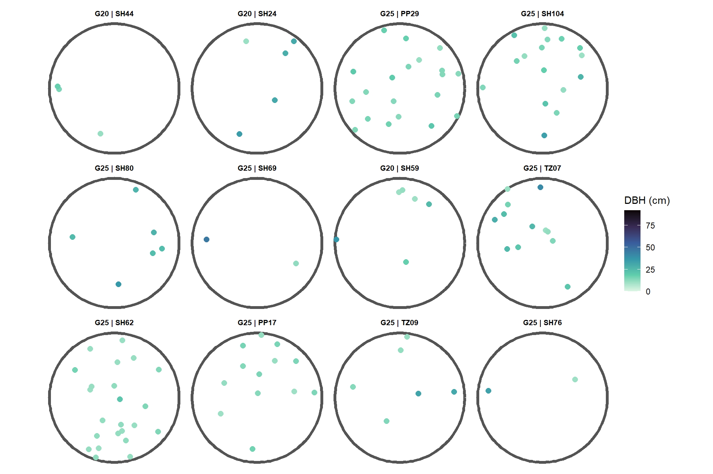
spot check of alignment between plot and tree spatial data looks good but we can quickly look at all plots and trees to see if any trees fall outside of the plot boundaries
# wfsi_eglinafb_trees %>% dplyr::glimpse()
wfsi_eglinafb_trees <-
1:nrow(wfsi_eglinafb_plots) %>%
purrr::map(function(nr){
p <- wfsi_eglinafb_plots %>% dplyr::slice(nr)
t <- wfsi_eglinafb_trees %>%
dplyr::inner_join(
p %>%
dplyr::select(unit,plot) %>%
sf::st_drop_geometry()
, by = dplyr::join_by(unit,plot)
)
# points outside?
out <- t %>% sf::st_filter(p, .predicate = sf::st_disjoint)
return(
t %>%
dplyr::left_join(
out %>%
sf::st_drop_geometry() %>%
dplyr::select(plot,unit,tree_number) %>%
dplyr::mutate(is_out_of_plot = T)
, by = dplyr::join_by(plot,unit,tree_number)
) %>%
dplyr::mutate(
is_out_of_plot = dplyr::coalesce(is_out_of_plot,F)
)
)
}) %>%
purrr::list_rbind()
# save to reference list
# add to the ref trees list
nm_temp <- project_data_df %>%
dplyr::filter(tolower(data_site_nm)=="wfsi_eglinafb") %>%
dplyr::pull(data_site_nm)
ref_trees_list[[nm_temp]] <- wfsi_eglinafb_trees
# ref_trees_list
# are there any out?
wfsi_eglinafb_trees %>% sf::st_drop_geometry() %>% dplyr::count(is_out_of_plot)## is_out_of_plot n
## 1 FALSE 899
## 2 TRUE 1uh-oh we have one tree outside of the plot
wfsi_eglinafb_plots %>%
dplyr::mutate(rn=dplyr::row_number()) %>%
dplyr::inner_join(
wfsi_eglinafb_trees %>%
dplyr::filter(is_out_of_plot) %>%
sf::st_drop_geometry() %>%
dplyr::distinct(unit,plot)
, by = dplyr::join_by(unit,plot)
) %>%
dplyr::pull(rn) %>%
purrr::map(p_fn_temp)## [[1]]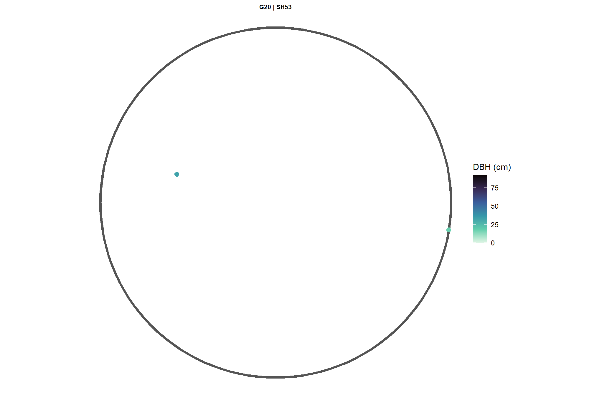
right on the edge, but just outside based on a slight misalignment in GPS locations or in/out determination in the field
3.0.2 Point Cloud Data
Andrew Hudak, & Benjamin Bright. (2026). Airborne Lidar Data from the 2023 Department of Defense Wildland Fire Science Initiative Eglin Air Force Base Campaign. WFSI Data Portal. doi:10.60594/W4B017
This dataset contains airborne light detection and ranging (lidar) data across burn units G20, G25, and L25 in Eglin AFB, FL. Kucera International acquired airborne lidar on January 28, 2023 (before prescribed fire), and on April 26, 2023 (after prescribed fire); prescribed fires occurred from March 11 to 19, 2023. Lidar data were acquired to characterize pre- and post-fire vegetation and estimate fire-caused biomass consumption.
some other relevant notes about the data:
Kucera International acquired airborne lidar data across burn units G20, G25, and L25 on January 28, 2023 (before prescribed fire), and across burn units G20 and G25 on April 26, 2023 (after prescribed fire); prescribed fires occurred from March 11 to 19, 2023. The lidar sensor, an Optech Galaxy T2000, was mounted on a PA-31 Piper Navajo Chieftain fixed-wing aircraft, which flew at an elevation of 1341 m (4400 ft) above ground level at a speed of about 150 knots, with a planned sidelap of 30%. The Optech Galaxy T2000 scanned with a laser pulse rate of 1600 kHz, a scan rate of 150 Hz, and a scan field of view of 30 degrees, which resulted in swath widths of 716 meters (2350 feet) and an average point density of 15 points per square meter.
LAZ file horizontal distance units are meters, in the UTM Zone 16N NAD83 (2011) geographic coordinate system (EPSG 6345)
let’s check out the raw ALS data
wfsi_eglinafb_las_f_temp <- "../data/WFSI_EglinAFB/post_fire_laz_apr2023"
wfsi_eglinafb_las_ctg_temp <- lidR::readLAScatalog(wfsi_eglinafb_las_f_temp)
wfsi_eglinafb_las_ctg_temp## class : LAScatalog (v1.4 format 8)
## extent : 521177.8, 530498, 3373000, 3383700 (xmin, xmax, ymin, ymax)
## coord. ref. : NAD83 / UTM zone 16N + NAVD88 height - Geoid18 (Meters)
## area : 566.25 km²
## points : 2.79 billion points
## type : airborne
## density : 4.9 points/m²
## density : 3.4 pulses/m²
## num. files : 10let’s check out the lidar data coverage compared to the field plot data
wfsi_eglinafb_las_ctg_temp@data$geometry %>%
sf::st_union() %>%
sf::st_as_sf() %>%
dplyr::mutate(data = "ALS data extent") %>%
mapview::mapview(
zcol = "data"
, layer.name="WFSI Eglin AFB: ALS data"
, popup=F
) +
mapview::mapview(
wfsi_eglinafb_trees
, zcol = "species"
, layer.name="WFSI Eglin AFB: field trees"
, popup=F
)use cloud2trees to process the raw point cloud data to generate a CHM for use in tree detection
################################################
# input/output data str
################################################
# outdir
c2t_output_dir_temp <- project_data_df %>%
dplyr::filter(tolower(data_site_nm)=="wfsi_eglinafb") %>%
dplyr::pull(data_dir)
c2t_process_dir_temp <- file.path(c2t_output_dir_temp, "point_cloud_processing_delivery")
# timer file
c2t_tracking_fnm_temp <- file.path(c2t_process_dir_temp, "processed_tracking_data.csv")
# save to tracking df
project_data_df <- project_data_df %>%
dplyr::mutate(
c2t_process_dir = ifelse(data_dir==c2t_output_dir_temp, c2t_process_dir_temp, "")
, c2t_tracking_fnm = ifelse(data_dir==c2t_output_dir_temp, c2t_tracking_fnm_temp, "")
)
# project_data_df %>% print(n=nrow(project_data_df))
################################################
# use point cloud point density
# to automatically set CHM and DTM res
# make a fn to do this based on input LAScatalog
################################################
get_ptcld_density_chm_res_fn <- function(las_ctg, rast_res_buffer = 0.01, min_chm_res_m = 0.15, chm_factor_for_dtm = 2) {
rast_res_buffer <- dplyr::coalesce(as.numeric(rast_res_buffer),0)
min_chm_res_m <- dplyr::coalesce(as.numeric(min_chm_res_m),0.15)
chm_factor_for_dtm <- dplyr::coalesce(as.numeric(chm_factor_for_dtm),2)
if(!inherits(las_ctg, "LAScatalog")){stop("must be a `LAScatalog` read with `lidR::readLAScatalog()`")}
if(
!( methods::slotNames(las_ctg) %>% stringr::str_equal("data") %>% any() )
){stop("can't find `data` layer in `LAScatalog` read with `lidR::readLAScatalog()`")}
if(!inherits(las_ctg@data, "sf")){stop("non-sf `data` from `LAScatalog` read with `lidR::readLAScatalog()`")}
# some point clouds have tiles with lots of overlap
# some point clouds have tiles with no overlap
# union over total area will help us identify overlap
# high overlap >> union will be much smaller than total area (e.g., uoa ratio < 0.66)
# low overlap >> union will be similar to total area (e.g., uoa ratio > 0.88)
# union area
las_uoa_temp <-
(
las_ctg@data %>%
dplyr::ungroup() %>%
sf::st_union() %>%
sf::st_area() %>%
as.numeric()
) /
# tot area
(
las_ctg@data %>%
dplyr::ungroup() %>%
dplyr::mutate(
area_m2 = sf::st_area(geometry) %>% as.numeric()
) %>%
dplyr::summarise(area_m2=sum(area_m2,na.rm=T)) %>%
dplyr::pull(area_m2)
)
# las_uoa_temp
# when a lot of overlap, union and calculate density based off union
if(las_uoa_temp<0.66){
pts_m2_temp <-
sum(las_ctg@data$Number.of.point.records,na.rm=T) /
( las_ctg@data$geometry %>% sf::st_union() %>% sf::st_area() %>% as.numeric() )
}else{
# when NOT a lot of overlap, calculate density as-is
pts_m2_temp <-
las_ctg@data %>%
dplyr::mutate(
area_m2 = sf::st_area(geometry) %>% as.numeric()
) %>%
sf::st_drop_geometry() %>%
dplyr::ungroup() %>%
dplyr::summarise(
pts_m2 = sum(Number.of.point.records,na.rm = T)/sum(area_m2,na.rm = T)
) %>%
dplyr::pull(pts_m2)
}
# pts_m2_temp
# 1/sqrt(pts_m2_temp)
chm_res_m_temp <- max(round(1/sqrt(pts_m2_temp),2) + rast_res_buffer, min_chm_res_m)
dtm_res_m_temp <- round(as.numeric(chm_res_m_temp)*chm_factor_for_dtm,2)
return(list(
pts_m2 = pts_m2_temp
, chm_res_m = chm_res_m_temp
, dtm_res_m = dtm_res_m_temp
))
}
# get point cloud density and raster resolutions
get_ptcld_density_chm_res_temp <- get_ptcld_density_chm_res_fn(wfsi_eglinafb_las_ctg_temp)
# get_ptcld_density_chm_res_temp
# fnm
chm_fnm_temp <- file.path(c2t_process_dir_temp, paste0("chm_",get_ptcld_density_chm_res_temp$chm_res_m,"m.tif") )
dtm_fnm_temp <- file.path(c2t_process_dir_temp, paste0("dtm_",get_ptcld_density_chm_res_temp$dtm_res_m,"m.tif") )
# save to tracking df
project_data_df <- project_data_df %>%
dplyr::mutate(
las_pts_m2 = ifelse(data_dir==c2t_output_dir_temp, get_ptcld_density_chm_res_temp$pts_m2, as.numeric(NA))
, chm_res_m = ifelse(data_dir==c2t_output_dir_temp, get_ptcld_density_chm_res_temp$chm_res_m, as.numeric(NA))
, chm_fnm = ifelse(data_dir==c2t_output_dir_temp, chm_fnm_temp, "")
, dtm_res_m = ifelse(data_dir==c2t_output_dir_temp, get_ptcld_density_chm_res_temp$dtm_res_m, as.numeric(NA))
, dtm_fnm = ifelse(data_dir==c2t_output_dir_temp, dtm_fnm_temp, "")
)
# project_data_df %>% dplyr::filter(data_dir==c2t_output_dir_temp) %>% dplyr::glimpse()
##############################################################
# cloud2trees::cloud2raster
##############################################################
if(
!file.exists(chm_fnm_temp)
|| !file.exists(dtm_fnm_temp)
){
# time it
st_temp <- Sys.time()
# run it
# cloud2trees
cloud2raster_ans <- cloud2trees::cloud2raster(
output_dir = c2t_output_dir_temp
, input_las_dir = wfsi_eglinafb_las_f_temp
, accuracy_level = 2
, keep_intrmdt = T
, dtm_res_m = get_ptcld_density_chm_res_temp$dtm_res_m # (1/sqrt(pts_m2_temp))*2
, chm_res_m = get_ptcld_density_chm_res_temp$chm_res_m # 1/sqrt(pts_m2_temp)
, min_height = 0 # effectively generates a DSM based on non-ground points
)
# timer
mins_temp <- difftime(Sys.time(),st_temp,units = "mins") %>% as.numeric()
# save tracking
dplyr::tibble(
timer_cloud2raster_mins = mins_temp
) %>%
write.csv(
file = c2t_tracking_fnm_temp
, row.names = F, append = F
)
}else{
dtm_temp <- terra::rast( dtm_fnm_temp )
chm_temp <- terra::rast( chm_fnm_temp )
cloud2raster_ans <- list(
"dtm_rast" = dtm_temp
, "chm_rast" = chm_temp
)
}we’ll set the minimum CHM resolution to 0.25 m to match the cloud2trees default. if the automatically-determined CHM resolution based on the point cloud density used in the cloud2trees::cloud2raster() was lower than this level, we’ll aggregate the raster using terra::aggregate() and terra::resample() to get the exact target resolution. if the determined CHM resolution was higher than this level due to low point density, we will use the CHM as-is since this is already the finest resolution possible with the point cloud density.
min_chm_res <- 0.25
##################################################################
# aggregate to make raster more coarse for tree detection
##################################################################
agg_chm_rast_fn <- function(chm, res, dir) {
fp <- file.path(dir, paste0("chm_",res,"m.tif"))
if(terra::res(chm)[1]<res){
# first, we'll borrow from the `cloud2trees` codebase to get a function to change the resolution of a raster exactly
###___________________________________________###
# adjust the resolution of a raster to be in exactly the target resolution
###___________________________________________###
if(
!file.exists(fp)
){
agg_chm_rast <- cloud2trees:::adjust_raster_resolution(
chm
, target_resolution = res
, fun = max
, resample_method = "max"
, ofile = fp
)
}else{
agg_chm_rast <- terra::rast( fp )
}
}else{
agg_chm_rast <- chm
}
return(agg_chm_rast)
}let’s aggregate the CHM for this site and put it into a list of CHM rasters that we can map over in all of the processing
agg_chm_rast_temp <- agg_chm_rast_fn(
chm = cloud2raster_ans$chm_rast
, res = min_chm_res
, dir =
project_data_df %>%
dplyr::filter(tolower(data_site_nm)=="wfsi_eglinafb") %>%
dplyr::pull(c2t_process_dir)
)
# agg_chm_rast_temp
# agg_chm_rast_temp %>% terra::clamp(lower = 1.37, values = F) %>% terra::plot()
# add to the chm list
nm_temp <- project_data_df %>%
dplyr::filter(tolower(data_site_nm)=="wfsi_eglinafb") %>%
dplyr::pull(data_site_nm)
chm_list[[nm_temp]] <- agg_chm_rast_temp
# chm_list3.0.3 Tree Detection
cloud2trees implements a CHM-based individual tree detection method accessible via cloud2trees::raster2trees(). this method requires a window function used to set the search radius used to find local maxima in the CHM. These local maxima represent individual tree top points and are subsequently used to delineate individual tree crowns via a marker-controlled watershed segmentation
because the objective of this study is to evaluate a species/genera classification method, we just want the best ITD results we can get based on the field reference data. We are not interested in evaluating tree segmentation here, that has already been done across varied input data and forest types.
let’s make a function to test many different window functions, compare the segmentation results to the field reference data, then select the best window function based on tree detection accuracy.
# test a bunch of different variable window sizes within `lidR::lmf()`
# that cover a range of possibilities and function shapes including linear, concave up, and constant
get_ws_fn_list <- function(min_ws = 0.5, max_ws = 6.0, n_linear = 40, n_concave = 30, n_cr = 30, max_ht = 45) {
# empty list
ws_functions <- list()
###########################################################################
# linear functions over a range
###########################################################################
# end points for the line
linear_targets <- base::seq(from = max_ws, to = max_ws*4*10, length.out = n_linear)
n_linear_pad <- ceiling(n_linear*1.5)
for (i in 1:n_linear_pad) {
target_height <- linear_targets[i]
slope <- (max_ws - min_ws) / target_height
# Pad names with a zero (01 to 60) for clean sorting
func_name <- base::paste0("linear_", base::sprintf("%02d", i))
v_min <- base::as.numeric(min_ws)
v_max <- base::as.numeric(max_ws)
v_slope <- base::as.numeric(slope)
func_body <- base::substitute(
dplyr::case_when(
base::is.na(x) ~ v_min,
(v_min + v_slope * x) < v_min ~ v_min,
(v_min + v_slope * x) > v_max ~ v_max,
TRUE ~ (v_min + v_slope * x)
),
list(v_min = v_min, v_max = v_max, v_slope = v_slope)
)
ws_functions[[func_name]] <- base::as.function(c(base::alist(x = ), func_body))
}
# the flat slopes are too close together...let's remove every other one
# how many to remove
num_to_remove <- length(ws_functions) - n_linear
# half
start_idx <- length(ws_functions) - (num_to_remove - 1) * 2
# remove
remove_idx <- seq(from = start_idx, to = length(ws_functions), by = 2)
ws_functions <- ws_functions[-remove_idx]
names(ws_functions) <- base::paste0("linear_", base::sprintf("%02d", c(1:length(ws_functions)) ))
# ws_functions[1]
# ws_functions[[1]]
# class(ws_functions[[1]])
# ws_functions[[1]](1.5)
# ws_functions[[1]](0)
# ws_functions[[1]](18)
#
# ws_functions[[40]](1.5)
# ws_functions[[40]](0)
# ws_functions[[40]](18)
###########################################################################
# concave down functions over a range
###########################################################################
# total potential growth (or distance) between the floor and the ceiling is: 6.0-0.5=5.5
# the halfway point of growth is exactly half of that distance: 5.5/2=2.75
# when the curve reaches its exact halfway point, the resulting window size must be the baseline floor plus that half-distance: 0.5+2.75=3.25
# in `half_sat`, setting the constant of 1.375 means the function will hit its halfway mark of 3.25 when the tree is only 1.375 meters tall
# max slope = 4 (for ever 1 m growth, ws increases by 4 m)
# 4 = (6.0-0.5)/c >> 4 = 5.5/c >> c = 5.5/4 >> c = 1.375
# how far out to look based on maximum plot/tree height? 45 m tree??
for (i in 1:n_concave) {
c <- 1.375 # ~dbh height
max_end <- max_ht # biggest tree everrrrr
half_sat <- c + (i - 1) * ( (max_end-c) / (n_concave-1))
func_name <- base::paste0("concave_down_", base::sprintf("%02d", i))
v_min <- base::as.numeric(min_ws)
v_max <- base::as.numeric(max_ws)
v_half <- base::as.numeric(half_sat)
func_body <- base::substitute(
dplyr::case_when(
base::is.na(x) ~ v_min,
(v_min + ((v_max - v_min) * x) / (v_half + x)) < v_min ~ v_min,
(v_min + ((v_max - v_min) * x) / (v_half + x)) > v_max ~ v_max,
TRUE ~ (v_min + ((v_max - v_min) * x) / (v_half + x))
),
list(v_min = v_min, v_max = v_max, v_half = v_half)
)
ws_functions[[func_name]] <- base::as.function(c(base::alist(x = ), func_body))
}
# ws_functions[length(ws_functions)]
# ws_functions[length(ws_functions)-1]
###########################################################################
# constant functions over a range
###########################################################################
# range
constant_values <- base::seq(from = min_ws, to = max_ws * 0.95, by = 0.5)
for (i in base::seq_along(constant_values)) {
const_val <- constant_values[i]
func_name <- base::paste0("constant_", base::sprintf("%02d", i))
v_min <- base::as.numeric(min_ws)
v_val <- base::as.numeric(const_val)
func_body <- base::substitute(
dplyr::case_when(
base::is.na(x) ~ v_min,
TRUE ~ v_val
),
list(v_min = v_min, v_val = v_val)
)
ws_functions[[func_name]] <- base::as.function(c(base::alist(x = ), func_body))
}
# ws_functions[length(ws_functions)]
# ws_functions[[length(ws_functions)]](0.1)
# ws_functions[[length(ws_functions)]](4)
# ws_functions[[length(ws_functions)]](15)
# ws_functions[length(ws_functions)-1]
# ###########################################################################
# # two-step linear functions over a range
# ###########################################################################
# # how many functions to test
# n_temp <- 16
# # max tree height in CHM
#
# # Calculate fractional boundary envelopes based on global constraints
# xb_min <- max_ht * 0.09 # ~5m height
# xb_max <- max_ht * 0.66 # ~25m height
# yb_min <- min_ws + (max_ws - min_ws) * 0.36 # ~2.5m window size
# yb_max <- min_ws + (max_ws - min_ws) * 0.88 # ~4.5m window size
#
# xb_sequence <- base::seq(from = xb_min, to = xb_max, length.out = n_temp)
# yb_sequence <- base::seq(from = yb_min, to = yb_max, length.out = n_temp)
# cap_sequence <- base::seq(from = 15.0, to = 40.0, length.out = n_temp)
#
# for (i in 1:n_temp) {
# x_b <- xb_sequence[i]
# y_b <- yb_sequence[i]
#
# slope1 <- (y_b - min_ws) / x_b
#
# target_cap_x <- x_b + cap_sequence[i]
# slope2 <- (max_ws - y_b) / (target_cap_x - x_b)
#
# func_name <- base::paste0("twostep_linear_", base::sprintf("%02d", i))
#
# v_min <- base::as.numeric(min_ws)
# v_max <- base::as.numeric(max_ws)
# v_xb <- base::as.numeric(x_b)
# v_yb <- base::as.numeric(y_b)
# v_slope1 <- base::as.numeric(slope1)
# v_slope2 <- base::as.numeric(slope2)
#
# func_body <- base::substitute(
# dplyr::case_when(
# base::is.na(x) ~ v_min,
# x <= v_xb ~ {
# val <- v_min + v_slope1 * x
# dplyr::case_when(val < v_min ~ v_min, val > v_max ~ v_max, TRUE ~ val)
# },
# x > v_xb ~ {
# val <- v_yb + v_slope2 * (x - v_xb)
# dplyr::case_when(val < v_min ~ v_min, val > v_max ~ v_max, TRUE ~ val)
# }
# ),
# list(v_min = v_min, v_max = v_max, v_xb = v_xb, v_yb = v_yb, v_slope1 = v_slope1, v_slope2 = v_slope2)
# )
#
# ws_functions[[func_name]] <- base::as.function(c(base::alist(x = ), func_body))
# }
#
#
# # ws_functions[length(ws_functions)]
# # ws_functions[[length(ws_functions)]](0.1)
# # ws_functions[[length(ws_functions)]](4)
# # ws_functions[[length(ws_functions)]](15)
# # ws_functions[length(ws_functions)-1]
###########################################################################
# chapman richards functions over a range
###########################################################################
# Generate parameters that smoothly spread across your MAX_CANOPY_HEIGHT
# Beta controls horizontal stretching; Gamma controls the sharpness of the initial lag
beta_sequence <- base::seq(from = 0.15, to = 0.02, length.out = n_cr)
gamma_sequence <- base::seq(from = 1.5, to = 4.0, length.out = n_cr)
for (i in 1:n_cr) {
b_param <- beta_sequence[i]
g_param <- gamma_sequence[i]
func_name <- base::paste0("chapman_richards_", base::sprintf("%02d", i))
v_min <- base::as.numeric(min_ws)
v_max <- base::as.numeric(max_ws)
v_beta <- base::as.numeric(b_param)
v_gamma <- base::as.numeric(g_param)
# Chapman-Richards equation with case_when boundaries
func_body <- base::substitute(
dplyr::case_when(
base::is.na(x) ~ v_min,
TRUE ~ {
# Core Chapman-Richards Sigmoid Formula
val <- v_min + (v_max - v_min) * (1 - base::exp(-v_beta * x))^v_gamma
dplyr::case_when(val < v_min ~ v_min, val > v_max ~ v_max, TRUE ~ val)
}
),
list(v_min = v_min, v_max = v_max, v_beta = v_beta, v_gamma = v_gamma)
)
ws_functions[[func_name]] <- base::as.function(c(base::alist(x = ), func_body))
}
return(ws_functions)
}let’s take that function for a spin to get a list of window functions for testing and plot the functions over a height range
get_ws_fn_list_ans <- get_ws_fn_list(min_ws = 0.5, max_ws = 7.0, n_linear = 30, n_concave = 30, n_cr = 30, max_ht = 45)
# get_ws_fn_list_ans %>% names()
# get_ws_fn_list_ans %>% length()
# cloud2trees::itd_ws_functions() %>% names()
# get_ws_fn_list_ans %>% names()
#
# cloud2trees::itd_ws_functions()[[1]] %>% class()
# get_ws_fn_list_ans[[1]] %>% class()
#
# cloud2trees::itd_ws_functions()[[1]](2.22) %>% class()
# get_ws_fn_list_ans[[1]](2.22) %>% class()
#
# cloud2trees::itd_ws_functions()[[1]](2.22)
# get_ws_fn_list_ans[[1]](2.22)
# plot that
ht_seq_temp <- base::seq(0, 50, by = 0.25)
p_dta_temp <-
purrr::map_dfr(
names(get_ws_fn_list_ans)
, function(name) {
tibble::tibble(
height = ht_seq_temp
, window_size = get_ws_fn_list_ans[[name]](ht_seq_temp)
, function_id = name
, shape_type = dplyr::case_when(
stringr::str_starts(name,"linear_") ~ "linear"
, stringr::str_starts(name,"concave_down_") ~ "concave down"
, stringr::str_starts(name,"twostep_linear_") ~ "two-step linear"
, stringr::str_starts(name,"constant_") ~ "constant"
, stringr::str_starts(name,"chapman_richards_") ~ "chapman-richards"
)
)
}
)
# p_dta_temp %>% dplyr::count(shape_type)
# p_dta_temp %>% dplyr::distinct(function_id,shape_type) %>% dplyr::count(shape_type)
p_temp <-
ggplot2::ggplot(
data = p_dta_temp
, mapping = ggplot2::aes(x = height, y = window_size, group = function_id, color = shape_type)
) +
ggplot2::geom_line(alpha = 0.6, linewidth = 1) +
ggplot2::labs(
x = "CHM (m)",
, y = "ws diameter (m)"
, color = "ws type"
) +
# ggplot2::facet_wrap(facets = dplyr::vars(shape_type)) +
ggplot2::scale_color_viridis_d(option = "viridis", direction = -1) +
ggplot2::scale_y_continuous(limits=c(0,NA), breaks = scales::breaks_extended(n=6)) +
ggplot2::theme_light() +
ggplot2::theme(
legend.position = "top"
)
p_temp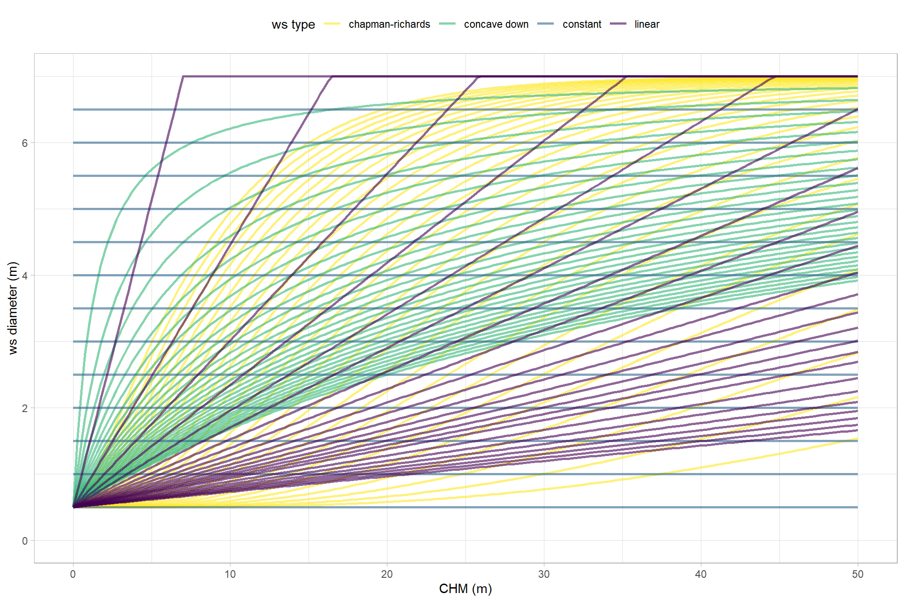
let’s look at the functions by type so they are a little easier to see since that is 103 unique functions
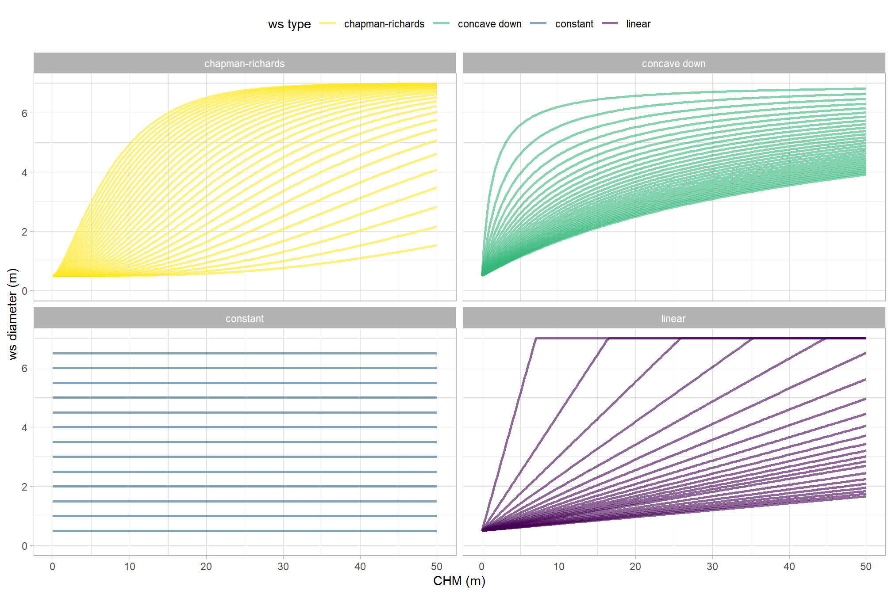
now we need a function to clip the CHM to the plot plus a buffer and run cloud2trees::raster2trees() for each window function. the return should be a spatial tree list unique by function.
# function to loop over ws function list in raster2trees
ws_testtest_fn <- function(
chm
, buffer = 5
, plot_sf
, ws_fn_list # a named list of functions ex: cloud2trees::itd_ws_functions()
) {
# min ht for chm so we can test non-na
min_chm_ht <- 1.37
# crop chm
chm_crop <- chm %>%
terra::crop(
plot_sf %>%
sf::st_transform(terra::crs(chm)) %>%
sf::st_buffer(buffer)
, mask = T
) %>%
terra::clamp(lower = min_chm_ht, values = F)
# terra::plot(chm_crop)
# terra::plot(
# plot_sf %>%
# sf::st_transform(terra::crs(chm))
# , add = T
# , border = "cyan"
# , col = NA
# )
if( !any( terra::global(chm_crop, fun = "anynotNA") ) ){
return(NULL)
}
# map over the function list
ws_tree_list <-
names(ws_fn_list) %>%
purrr::set_names() %>%
purrr::map(function(nm){
if (exists("my_temp_dir") && dir.exists(my_temp_dir)) {
unlink(my_temp_dir, recursive = TRUE, force = TRUE)
}
if (exists("my_temp_dir2") && dir.exists(my_temp_dir2)) {
unlink(my_temp_dir2, recursive = TRUE, force = TRUE)
}
warning(paste0("making dir: ",nm,"....",Sys.time()),immediate. = T,call. = F)
my_temp_dir <- tempfile(pattern = nm)
dir.create(my_temp_dir, showWarnings = FALSE)
my_temp_dir2 <- tempfile(pattern = paste0("xx",nm))
dir.create(my_temp_dir2, showWarnings = FALSE)
warning(paste0("raster2trees: ",nm,"....",Sys.time()),immediate. = T,call. = F)
safe_raster2trees <- purrr::safely( cloud2trees::raster2trees )
xxx_raster2trees_ans <- safe_raster2trees(
chm_rast = chm_crop
, outfolder = my_temp_dir
, ws = ws_fn_list[[nm]]
, min_height = min_chm_ht
, min_crown_area = 0.5
, tempdir = my_temp_dir2
)
if(!is.null(xxx_raster2trees_ans$result)){
xxx_raster2trees_ans <- xxx_raster2trees_ans$result
# xxx_raster2trees_ans %>% names()
return(
xxx_raster2trees_ans %>%
cloud2trees::simplify_multipolygon_crowns()
# sf::st_drop_geometry() %>%
# sf::st_as_sf(coords = c("tree_x", "tree_y"), crs = sf::st_crs(xxx_raster2trees_ans))
)
}else{return(NULL)}
}) %>%
purrr::list_rbind(names_to = "ws_fn_nm")
# ws_tree_list %>% dplyr::glimpse()
# ws_tree_list %>% sf::st_drop_geometry() %>% dplyr::count(ws_fn_nm)
# ws_tree_list %>% class()
return(ws_tree_list)
}get the individual tree predictions for each window function for the area within the field reference plots with a buffer
c2t_process_dir_temp <-
project_data_df %>%
dplyr::filter(tolower(data_site_nm)=="wfsi_eglinafb") %>%
dplyr::pull(c2t_process_dir)
fnm_temp <- file.path(c2t_process_dir_temp,"ws_pred_trees.gpkg")
project_data_df <- project_data_df %>%
dplyr::mutate(
ws_pred_trees_fnm = ifelse(c2t_process_dir==c2t_process_dir_temp, fnm_temp, "")
)
if(!file.exists(fnm_temp)){
wfsi_eglinafb_ws_pred_trees <-
1:nrow(wfsi_eglinafb_plots) %>%
purrr::map(
\(rn)
ws_testtest_fn(
chm = chm_list$WFSI_EglinAFB
, buffer = 5.5
, plot_sf =
wfsi_eglinafb_plots %>%
dplyr::ungroup() %>%
dplyr::slice(rn) %>%
sf::st_union()
# a named list of functions ex: cloud2trees::itd_ws_functions()
, ws_fn_list = get_ws_fn_list_ans # cloud2trees::itd_ws_functions() #
)
) %>%
purrr::list_rbind(names_to = "plot_dta_idx")
# add plot id
wfsi_eglinafb_ws_pred_trees <-
wfsi_eglinafb_ws_pred_trees %>%
dplyr::left_join(
wfsi_eglinafb_plots %>%
dplyr::mutate(plot_dta_idx=dplyr::row_number()) %>%
sf::st_drop_geometry() %>%
dplyr::select(plot_dta_idx,plot_id)
, by = "plot_dta_idx"
)
# get dbh
wfsi_eglinafb_ws_pred_trees_dbh_temp <-
wfsi_eglinafb_ws_pred_trees %>%
dplyr::rename(xxxtreeID=treeID) %>%
dplyr::mutate(
treeID = dplyr::row_number() %>% as.character()
) %>%
cloud2trees::trees_dbh()
# wfsi_eglinafb_ws_pred_trees_dbh_temp %>% dplyr::glimpse()
# add to trees
wfsi_eglinafb_ws_pred_trees <-
wfsi_eglinafb_ws_pred_trees %>%
dplyr::mutate(
join_id = dplyr::row_number() %>% as.character()
) %>%
dplyr::left_join(
wfsi_eglinafb_ws_pred_trees_dbh_temp %>%
sf::st_drop_geometry() %>%
dplyr::mutate(
join_id = as.character(treeID)
) %>%
dplyr::select(
join_id, tidyselect::starts_with("fia_est_dbh"), dbh_cm
)
, by = "join_id"
)
# wfsi_eglinafb_ws_pred_trees %>% dplyr::glimpse()
# # plot real quick
# wfsi_eglinafb_ws_pred_trees %>%
# sf::st_drop_geometry() %>%
# dplyr::slice_sample(n = 9999) %>%
# ggplot2::ggplot(mapping = ggplot2::aes(x=tree_height_m,y=dbh_cm)) +
# ggplot2::geom_point() +
# ggplot2::geom_point(mapping = ggplot2::aes(y=fia_est_dbh_cm_lower),color="gray") +
# ggplot2::geom_point(mapping = ggplot2::aes(y=fia_est_dbh_cm_upper),color="gray")
# save
sf::st_write(wfsi_eglinafb_ws_pred_trees, dsn = fnm_temp, quiet = T, append = F)
}else{
wfsi_eglinafb_ws_pred_trees <- sf::st_read(fnm_temp, quiet = T)
}
wfsi_eglinafb_ws_pred_trees <- wfsi_eglinafb_ws_pred_trees %>%
dplyr::mutate(
ws_type =
ws_fn_nm %>%
# removes all numeric digits
stringr::str_remove_all("[0-9]+") %>%
stringr::str_replace_all("_"," ") %>%
stringr::str_squish() %>%
as.factor() %>%
forcats::fct_inorder(ordered = T)
, treeID = as.character(treeID)
)
# wfsi_eglinafb_ws_pred_trees %>% dplyr::glimpse()
# wfsi_eglinafb_ws_pred_trees %>% sf::st_drop_geometry() %>% dplyr::count(ws_type)let’s check out one example field plot and a few different window function tree detection and crown delineation results
# plot
p_temp <- wfsi_eglinafb_plots %>% dplyr::slice(1)
# some trees
t_temp <-
wfsi_eglinafb_ws_pred_trees %>%
dplyr::filter(plot_id==p_temp$plot_id[1]) %>%
dplyr::inner_join(
wfsi_eglinafb_ws_pred_trees %>%
sf::st_drop_geometry() %>%
dplyr::distinct(ws_fn_nm,ws_type) %>%
dplyr::slice_sample(n = 3, by = ws_type) %>%
dplyr::select(ws_fn_nm)
, by = "ws_fn_nm"
)
chm_temp <- chm_list[["WFSI_EglinAFB"]] %>%
terra::crop(
t_temp %>%
sf::st_union() %>%
sf::st_bbox() %>%
sf::st_as_sfc() %>%
terra::vect()
, mask = T
)
# terra::plot(chm_temp)
plt_temp <-
chm_temp %>%
terra::clamp(lower = 1.37, values = F) %>%
terra::as.data.frame(xy=T) %>%
dplyr::rename(f=3) %>%
ggplot2::ggplot() +
ggplot2::geom_tile(
mapping = ggplot2::aes(x=x,y=y,fill=f)
, color = NA
, lwd = 0
) +
ggplot2::scale_fill_viridis_c(option = "plasma", na.value = "transparent", name = "CHM (m)") +
ggplot2::scale_x_continuous(expand = c(0, 0)) +
ggplot2::scale_y_continuous(expand = c(0, 0)) +
ggplot2::theme_void() +
ggplot2::theme(legend.position = "top")
plt_temp +
ggplot2::geom_sf(
data = p_temp %>% sf::st_transform(terra::crs(chm_temp))
, fill = NA
, color = "black"
, lwd = 0.8
) +
ggplot2::geom_sf(
data = t_temp
, mapping = ggplot2::aes(color = ws_type)
, fill = NA
, lwd = 0.7
) +
ggplot2::scale_color_viridis_d() +
ggplot2::facet_wrap(facets = dplyr::vars(ws_fn_nm), ncol = 3) +
ggplot2::theme(
strip.text = ggplot2::element_text(face = "bold")
, strip.background = ggplot2::element_rect(color = "black")
, panel.border = ggplot2::element_rect(color = "black", fill = NA, linewidth = 0.5)
) +
ggplot2::guides(
color = "none"
)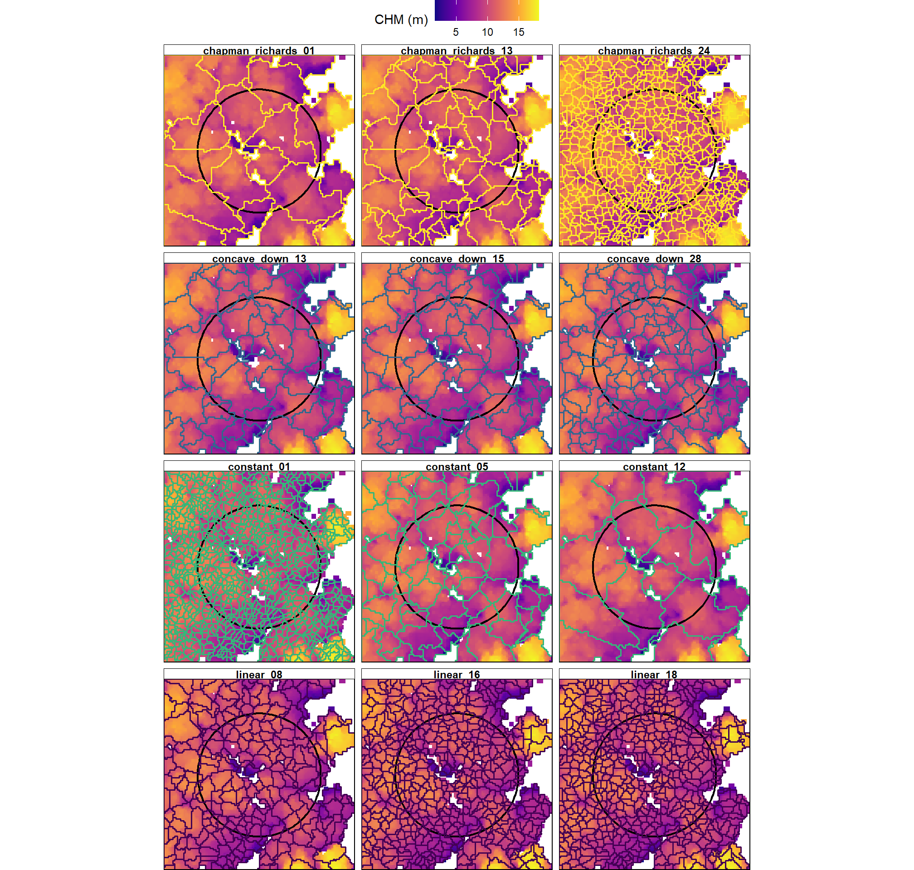
now we need a function to perform instance matching of the predictions and reference data. to keep things simple, since all the reference field data includes point locations, we’ll perform matching based on a spatial intersection of these points with the predicted tree crowns. if multiple tree points fall within a single crown, we’ll select the tree that is closest in terms of size based on whatever field data is available (height or DBH). One predicted tree will only be matched with one field reference tree and vice-versa.
###########################################################################################
###########################################################################################
## this is for matching predicted crowns to reference points
## this is for matching predicted crowns to reference points
## this is for matching predicted crowns to reference points
## this is for matching predicted crowns to reference points
###########################################################################################
###########################################################################################
# instance matching function for points reference and polys predictions
# matches a single set of predictions with a single reference set
instance_match_fn <- function(
pred_crowns
, ref_points
){
# check
if(
!any( stringr::str_equal(names(pred_crowns),"treeID") ) ||
!any( stringr::str_equal(names(ref_points),"treeID") )
){
stop("both reference and predicted data must have `treeID` column")
}
if(nrow(ref_points)==0){return(NULL)}
if(nrow(pred_crowns)==0 && nrow(ref_points)>0){
return(
ref_points %>%
sf::st_drop_geometry() %>%
dplyr::mutate(
ref_match_idx = dplyr::row_number()
, pred_match_idx = as.numeric(NA)
) %>%
dplyr::select(dplyr::all_of(c(
"ref_match_idx"
, "pred_match_idx"
))) %>%
dplyr::mutate(
match_grp = "omission"
, match_grp = factor(
match_grp
, ordered = T
, levels = c(
"true positive"
, "commission"
, "omission"
)
) %>% forcats::fct_rev()
)
)
}
# set up matching col based on what data is available
if(
any( stringr::str_equal(names(pred_crowns),"tree_height_m") ) &&
any( stringr::str_equal(names(ref_points),"tree_height_m") )
){
pred_crowns <- pred_crowns %>% dplyr::mutate(xxx_match_col = as.numeric(tree_height_m))
ref_points <- ref_points %>% dplyr::mutate(xxx_match_col = as.numeric(tree_height_m))
}else if(
any( stringr::str_equal(names(pred_crowns),"dbh_cm") ) &&
any( stringr::str_equal(names(ref_points),"dbh_cm") )
){
pred_crowns <- pred_crowns %>% dplyr::mutate(xxx_match_col = as.numeric(dbh_cm))
ref_points <- ref_points %>% dplyr::mutate(xxx_match_col = as.numeric(dbh_cm))
}else{
stop("both reference and predicted data must have `tree_height_m` or `dbh_cm` column")
}
# get rid of data without data
pred_crowns <- pred_crowns %>% dplyr::filter(!is.na(xxx_match_col), xxx_match_col>0) %>%
# make an id
dplyr::mutate(xxx_id = dplyr::row_number())
ref_points <- ref_points %>% dplyr::filter(!is.na(xxx_match_col), xxx_match_col>0) %>%
# make it the same crs
sf::st_transform(sf::st_crs(pred_crowns)) %>%
# make an id
dplyr::mutate(xxx_id = dplyr::row_number())
# intersection for tp's
i_temp <-
pred_crowns %>%
dplyr::rename_with(
.fn = ~stringr::str_replace(.x, "^xxx_", "xxx_pred_")
, .cols = tidyselect::starts_with("xxx_")
) %>%
sf::st_intersection(
ref_points %>%
dplyr::select(xxx_id,xxx_match_col) %>%
dplyr::rename_with(
.fn = ~stringr::str_replace(.x, "^xxx_", "xxx_ref_")
, .cols = tidyselect::starts_with("xxx_")
)
) %>%
sf::st_drop_geometry() %>%
# absolute diff between match col
dplyr::mutate(
xxx_abs_diff = abs(xxx_pred_match_col - xxx_ref_match_col)
) %>%
# sorting is key to make the purrr::reduce work how we want it
dplyr::arrange(
desc(xxx_pred_match_col)
, xxx_pred_id
, xxx_abs_diff
)
# i_temp %>% dplyr::glimpse()
# if there even are any matches
if(nrow(i_temp)>1){
# ?purrr::reduce
# purrr::reduce(letters[1:5], paste, sep = ".")
# 1:3 %>% reduce(`+`)
match_temp <- purrr::reduce(
# go through all rows except first since we start there
.x = c(2:nrow(i_temp))
# start with the first row
, .init = i_temp %>% dplyr::slice(1) # = iter_temp
, .f = function(iter_temp, i){
#ids of curr row
pred_id <- i_temp$xxx_pred_id[i]
ref_id <- i_temp$xxx_ref_id[i]
# either one used?
pred_used <- pred_id %in% iter_temp$xxx_pred_id
ref_used <- ref_id %in% iter_temp$xxx_ref_id
# add if freee
if(!pred_used && !ref_used) {
return(
iter_temp %>%
dplyr::bind_rows(
dplyr::slice(i_temp, i)
)
)
}else{
# return current state
return(iter_temp)
}
})
# match_temp %>% dplyr::glimpse()
# match_temp %>% dplyr::count(xxx_pred_id) %>% dplyr::filter(n>1) %>% nrow()
# match_temp %>% dplyr::count(xxx_ref_id) %>% dplyr::filter(n>1) %>% nrow()
}else{
match_temp <- i_temp
}
# match_temp %>% dplyr::glimpse()
# these are matches
return_df <- match_temp %>%
dplyr::rename(
ref_match_idx = xxx_ref_id
, pred_match_idx = xxx_pred_id
) %>%
dplyr::select(dplyr::all_of(c(
"ref_match_idx"
, "pred_match_idx"
))) %>%
dplyr::mutate(match_grp = "true positive")
# return_df %>% dplyr::glimpse()
return_df <-
return_df %>%
# if reference but no predictions...they are all omissions (FN)
dplyr::bind_rows(
ref_points %>%
dplyr::filter(
!(xxx_id %in% match_temp$xxx_ref_id)
) %>%
sf::st_drop_geometry() %>%
dplyr::rename(
ref_match_idx = xxx_id
) %>%
dplyr::mutate(pred_match_idx = as.numeric(NA)) %>%
dplyr::select(dplyr::all_of(c(
"ref_match_idx"
, "pred_match_idx"
))) %>%
dplyr::mutate(match_grp = "omission")
) %>%
# if predictions but no reference...they are all commissions (FP)
dplyr::bind_rows(
pred_crowns %>%
dplyr::filter(
!(xxx_id %in% match_temp$xxx_pred_id)
) %>%
sf::st_drop_geometry() %>%
dplyr::rename(
pred_match_idx = xxx_id
) %>%
dplyr::mutate(ref_match_idx = as.numeric(NA)) %>%
dplyr::select(dplyr::all_of(c(
"ref_match_idx"
, "pred_match_idx"
))) %>%
dplyr::mutate(match_grp = "commission")
) %>%
# add on treeID
dplyr::left_join(
ref_points %>%
sf::st_drop_geometry() %>%
dplyr::select(xxx_id, treeID) %>%
dplyr::rename(
ref_match_idx = xxx_id
, ref_treeID = treeID
)
, by = "ref_match_idx"
) %>%
# add on treeID
dplyr::left_join(
pred_crowns %>%
sf::st_drop_geometry() %>%
dplyr::select(xxx_id, treeID) %>%
dplyr::rename(
pred_match_idx = xxx_id
, pred_treeID = treeID
)
, by = "pred_match_idx"
)
# return_df %>% dplyr::glimpse()
# return_df %>% View()
# return_df %>% dplyr::count(match_grp)
# make match_grp factor
return_df <- return_df %>%
dplyr::mutate(
match_grp = factor(
match_grp
, ordered = T
, levels = c(
"true positive"
, "commission"
, "omission"
)
) %>% forcats::fct_rev()
)
return(return_df)
}
###################################
### test for one plot
### test for one plot
### test for one plot
###################################
instance_match_fn(
pred_crowns =
wfsi_eglinafb_ws_pred_trees %>%
dplyr::filter(
plot_id == wfsi_eglinafb_plots$plot_id[1]
, ws_fn_nm==wfsi_eglinafb_ws_pred_trees$ws_fn_nm[1]
)
, ref_points =
wfsi_eglinafb_trees %>%
dplyr::filter(
plot_id == wfsi_eglinafb_plots$plot_id[1]
)
) %>%
# dplyr::glimpse()
dplyr::count(match_grp)## match_grp n
## 1 omission 15
## 2 commission 8
## 3 true positive 7remember, we have predictions for many different window functions for each plot. we need a function to iterate over each set of predictions (i.e. window function) for a single plot. this is where we’ll filter the predictions to attempt to match the field data collection protocol (e.g. measure trees >= 10 cm DBH)
ws_iter_instance_match_fn <- function(
plot_sf # needs plot_id # should be a single plot
, ref_pts # needs plot_id
, pred_polys # needs plot_id
# minimum tree height
, min_ht_m = NA
# -OR- minimum DBH
, min_dbh_cm = NA
){
if(
!any( stringr::str_equal(names(plot_sf),"plot_id") )
){
stop("`plot_sf` needs column named `plot_id`")
}
if(
!any( stringr::str_equal(names(ref_pts),"plot_id") )
){
stop("`ref_pts` needs column named `plot_id`")
}
if(
!any( stringr::str_equal(names(pred_polys),"plot_id") )
){
stop("`pred_polys` needs column named `plot_id`")
}
# pred polys
pred_polys <-
pred_polys %>%
dplyr::filter(
plot_id == plot_sf$plot_id[1]
)
# reference points
ref_pts <-
ref_pts %>%
dplyr::filter(
plot_id == plot_sf$plot_id[1]
)
# filter based on field survey limit
if(
!is.na(as.numeric(min_dbh_cm))
){
# do they exist? .... PRED
if(
any( stringr::str_equal(names(pred_polys),"fia_est_dbh_cm_upper") )
){
pred_polys <- pred_polys %>%
dplyr::filter(
dplyr::coalesce(fia_est_dbh_cm_upper,0) >= as.numeric(min_dbh_cm)
)
}else if(
any( stringr::str_equal(names(pred_polys),"dbh_cm") )
){
pred_polys <- pred_polys %>%
dplyr::filter(
dplyr::coalesce(dbh_cm,0) >= as.numeric(min_dbh_cm)
)
}else{
stop("`pred_polys` needs column named `dbh_cm`")
}
# do they exist? .... REF
if(
any( stringr::str_equal(names(ref_pts),"dbh_cm") )
){
ref_pts <- ref_pts %>%
dplyr::filter(
dplyr::coalesce(dbh_cm,0) >= as.numeric(min_dbh_cm)
)
}else{
stop("`ref_pts` needs column named `dbh_cm`")
}
}else if(
!is.na(as.numeric(min_ht_m))
){
# do they exist? .... PRED
if(
any( stringr::str_equal(names(pred_polys),"tree_height_m") )
){
pred_polys <- pred_polys %>%
dplyr::filter(
dplyr::coalesce(tree_height_m,0) >= as.numeric(min_ht_m)
)
}else{
stop("`pred_polys` needs column named `tree_height_m`")
}
# do they exist? .... REF
if(
any( stringr::str_equal(names(ref_pts),"tree_height_m") )
){
ref_pts <- ref_pts %>%
dplyr::filter(
dplyr::coalesce(tree_height_m,0) >= as.numeric(min_ht_m)
)
}else{
stop("`ref_pts` needs column named `tree_height_m`")
}
}
if(nrow(ref_pts)==0){return(NULL)}
# map over it
if(
!any( stringr::str_equal(names(pred_polys),"ws_fn_nm") )
){
stop("`pred_polys` needs column named `ws_fn_nm` ... see ws_testtest_fn() ")
}
if(
!any( stringr::str_equal(names(pred_polys),"tree_x") )
){
stop("`pred_polys` needs column named `tree_x` ... see ws_testtest_fn() ")
}
if(
!any( stringr::str_equal(names(pred_polys),"tree_y") )
){
stop("`pred_polys` needs column named `tree_y` ... see ws_testtest_fn() ")
}
# map it
instance_match_ans <-
unique(pred_polys$ws_fn_nm) %>%
purrr::set_names() %>%
purrr::map(function(nm){
# which preds?
these_pred_polys <-
pred_polys %>%
dplyr::filter(
ws_fn_nm == nm
)
# instance match
###########################################################################################
## this is for matching predicted crowns to reference points
###########################################################################################
im <-
instance_match_fn(
pred_crowns = these_pred_polys
, ref_points = ref_pts
)
# ###########################################################################################
# ## this is for matching predicted points to reference points
# ###########################################################################################
# im <-
# reference_prediction_match(
# pred_data = these_pred_polys
# , ref_data = ref_pts
# , max_dist_m = 2
# , max_error_pct = 0.5
# ) %>%
# ground_truth_prediction_match()
# remove commission points outside plot boundary?
# remove commission points outside plot boundary?
# get rid of commissions outside of plot
outs <-
these_pred_polys %>%
dplyr::mutate(
pred_match_idx = dplyr::row_number()
) %>%
sf::st_drop_geometry() %>%
sf::st_as_sf(coords = c("tree_x", "tree_y"), crs = sf::st_crs(pred_polys)) %>%
sf::st_filter(
plot_sf %>% sf::st_union() %>% sf::st_transform(sf::st_crs(pred_polys))
, .predicate = sf::st_disjoint
) %>%
sf::st_drop_geometry() %>%
dplyr::select(pred_match_idx) %>%
dplyr::mutate(is_out = T)
return_df <-
im %>%
dplyr::left_join(
outs
, by = "pred_match_idx"
) %>%
dplyr::filter(
!(match_grp == "commission" & dplyr::coalesce(is_out,F)==T)
) %>%
dplyr::select(-is_out)
return(return_df)
}) %>%
purrr::list_rbind(names_to = "ws_fn_nm")
return(instance_match_ans)
}let’s test that for a single plot
###################################
### test for one plot
### test for one plot
### test for one plot
###################################
ws_iter_instance_match_fn(
# needs plot_id # should be a single plot
plot_sf = wfsi_eglinafb_plots %>% dplyr::slice(4)
# needs plot_id
, ref_pts = wfsi_eglinafb_trees
# needs plot_id
, pred_polys = wfsi_eglinafb_ws_pred_trees %>%
dplyr::inner_join(
wfsi_eglinafb_ws_pred_trees %>%
sf::st_drop_geometry() %>%
dplyr::distinct(ws_fn_nm,ws_type) %>%
dplyr::slice_sample(n = 3, by = ws_type) %>%
dplyr::select(ws_fn_nm)
, by = "ws_fn_nm"
)
# minimum tree height
, min_ht_m = NA
# -OR- minimum DBH
, min_dbh_cm = 10
) %>%
# plot
dplyr::count(ws_fn_nm,match_grp) %>%
dplyr::group_by(ws_fn_nm) %>%
dplyr::mutate(pct = n/sum(n)) %>%
ggplot2::ggplot(
mapping = ggplot2::aes(x = pct, y = ws_fn_nm, fill=match_grp, group=match_grp)
) +
ggplot2::geom_col(
width = 0.7, alpha=0.95
) +
ggplot2::scale_fill_viridis_d(option = "magma", begin = 0.2, end = 0.8) +
ggplot2::scale_x_continuous(labels = scales::percent_format()) +
ggplot2::theme_light() +
ggplot2::theme(
legend.position = "top"
, legend.direction = "horizontal"
)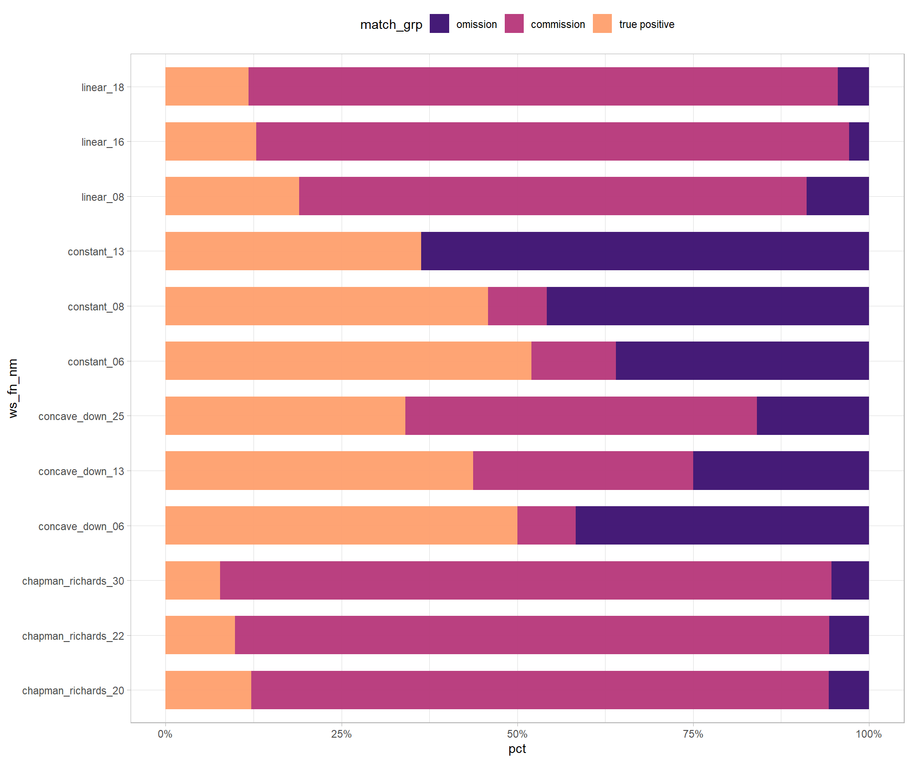
now, we need to iterate over all plots at a study site
plot_iter_instance_match_fn <- function(
ref_plots
, ref_pts
# needs plot_id
, pred_polys
# minimum tree height
, min_ht_m = NA
# -OR- minimum DBH
, min_dbh_cm = NA
) {
if(
!any( stringr::str_equal(names(ref_plots),"plot_id") )
){
stop("`ref_plots` needs column named `plot_id`")
}
if(
!any( stringr::str_equal(names(ref_pts),"plot_id") )
){
stop("`ref_pts` needs column named `plot_id`")
}
if(
!any( stringr::str_equal(names(pred_polys),"plot_id") )
){
stop("`pred_polys` needs column named `plot_id`")
}
ws_iter_instance_match_ans <-
unique(ref_plots$plot_id) %>%
purrr::set_names() %>%
purrr::map(
\(pid)
ws_iter_instance_match_fn(
# needs plot_id # should be a single plot
plot_sf = ref_plots %>% dplyr::filter(plot_id==pid)
# needs plot_id
, ref_pts = ref_pts
# needs plot_id
, pred_polys = pred_polys
# minimum tree height
, min_ht_m = min_ht_m
# -OR- minimum DBH
, min_dbh_cm = min_dbh_cm
)
) %>%
purrr::list_rbind(names_to = "plot_id")
return(ws_iter_instance_match_ans)
}
# get the ans
c2t_process_dir_temp <-
project_data_df %>%
dplyr::filter(tolower(data_site_nm)=="wfsi_eglinafb") %>%
dplyr::pull(c2t_process_dir)
fnm_temp <- file.path(c2t_process_dir_temp,"ws_instance_match.csv")
if(!file.exists(fnm_temp)){
wfsi_eglinafb_ws_instance_match <-
plot_iter_instance_match_fn(
ref_plots = ref_plots_list[["WFSI_EglinAFB"]]
, ref_pts = ref_trees_list[["WFSI_EglinAFB"]]
, pred_polys = wfsi_eglinafb_ws_pred_trees
, min_ht_m = NA
, min_dbh_cm = 10
)
readr::write_csv(wfsi_eglinafb_ws_instance_match, file = fnm_temp, append = F, progress = F)
}else{
wfsi_eglinafb_ws_instance_match <- readr::read_csv(file = fnm_temp, show_col_types = F, progress = F)
}
# huh?
# wfsi_eglinafb_ws_instance_match %>% dplyr::glimpse()lastly, we need a function to aggregate these instance segmentation counts (TP, FP, and FN) to evaluate the overall accuracy of the tree segmentation method. then, we’ll select the best window function and apply that across the entire study area.
###############################################################
###############################################################
###############################################################
###############################################################
# first function takes df with cols tp_n, fp_n, and fn_n to calculate rates
###############################################################
###############################################################
###############################################################
###############################################################
confusion_matrix_scores_fn <- function(df){
df %>%
dplyr::mutate(
omission_rate = dplyr::case_when(
dplyr::coalesce(tp_n,0) == 0 & dplyr::coalesce(fn_n,0) == 0 ~ 0 # if there are no actual trees, there is nothing to miss
, dplyr::coalesce(tp_n,0) == 0 & dplyr::coalesce(fn_n,0) > 0 ~ 1 # every single actual tree was missed
, dplyr::coalesce(fn_n,0) == 0 & dplyr::coalesce(tp_n,0) > 0 ~ 0
, T ~ fn_n/(tp_n+fn_n)
) # False Negative Rate or Miss Rate
, commission_rate = dplyr::case_when(
dplyr::coalesce(tp_n,0) == 0 & dplyr::coalesce(fp_n,0) == 0 ~ 0 # if no predictions are made, the model could not have made any commission errors
, dplyr::coalesce(fp_n,0) == 0 & dplyr::coalesce(tp_n,0) > 0 ~ 0
, T ~ fp_n/(tp_n+fp_n)
) # False Positive Rate
, precision = dplyr::case_when(
dplyr::coalesce(tp_n,0) == 0 & dplyr::coalesce(fp_n,0) == 0 ~ 1 # if no predictions are made, the model made zero incorrect positive claims
, dplyr::coalesce(tp_n,0) == 0 & dplyr::coalesce(fp_n,0) > 0 ~ 0
, T ~ tp_n/(tp_n+fp_n)
)
, recall = dplyr::case_when(
dplyr::coalesce(tp_n,0) == 0 & dplyr::coalesce(fn_n,0) == 0 ~ 1 # if there are no actual trees, there is nothing to miss
, dplyr::coalesce(tp_n,0) == 0 & dplyr::coalesce(fn_n,0) > 0 ~ 0 # every single actual tree was missed
, T ~ tp_n/(tp_n+fn_n)
)
, f_score = dplyr::case_when(
dplyr::coalesce(precision,0) == 0 | dplyr::coalesce(recall,0) == 0 ~ 0
, T ~ 2 * ( (precision*recall)/(precision+recall) )
)
)
}
###############################################################
###############################################################
###############################################################
###############################################################
# aggregate results from ground_truth_prediction_match()
###############################################################
###############################################################
###############################################################
###############################################################
agg_ground_truth_match <- function(ground_truth_prediction_match_ans) {
if(nrow(ground_truth_prediction_match_ans)==0){return(NULL)}
if( !(names(ground_truth_prediction_match_ans) %>% stringr::str_equal("match_grp") %>% any()) ){stop("ground_truth_prediction_match_ans must contain `match_grp` column")}
# check for difference columns (contains "_diff") and calc rmse for only those to return a single line df with colums for each diff_rmse
if(
(ground_truth_prediction_match_ans %>%
sf::st_drop_geometry() %>%
dplyr::select(tidyselect::starts_with("diff_") | tidyselect::starts_with("pct_diff_")) %>%
ncol() )>0
){
# get rmse and mean difference/error for all columns with "_diff" but not "pct_diff"
# get mape for all columns with "pct_diff" but not "diff_"
rmse_df <-
ground_truth_prediction_match_ans %>%
sf::st_drop_geometry() %>%
dplyr::ungroup() %>%
dplyr::select(
tidyselect::starts_with("diff_")
| tidyselect::starts_with("pct_diff_")
) %>%
tidyr::pivot_longer(dplyr::everything(), values_drop_na = T) %>%
dplyr::group_by(name) %>%
dplyr::summarise(
sq = sum(value^2, na.rm = T)
, mean = mean(value, na.rm = T)
, sumabs = sum(abs(value), na.rm = T)
, nomiss = sum(!is.na(value))
) %>%
dplyr::ungroup() %>%
dplyr::mutate(
rmse = dplyr::case_when(
dplyr::coalesce(nomiss,0)==0 ~ as.numeric(NA)
, T ~ sqrt(sq/nomiss)
)
, mape = dplyr::case_when(
dplyr::coalesce(nomiss,0)==0 ~ as.numeric(NA)
, T ~ sumabs/nomiss
)
) %>%
# NA nonsense values
dplyr::mutate(
mape = dplyr::case_when(
stringr::str_starts(name, "pct_diff_") ~ mape
, T ~ as.numeric(NA)
)
, rmse = dplyr::case_when(
stringr::str_starts(name, "pct_diff_") ~ as.numeric(NA)
, T ~ rmse
)
, mean = dplyr::case_when(
stringr::str_starts(name, "pct_diff_") ~ as.numeric(NA)
, T ~ mean
)
) %>%
dplyr::select(name,rmse,mean,mape) %>%
tidyr::pivot_wider(
names_from = name
, values_from = c(rmse,mean,mape)
, names_glue = "{name}_{.value}"
) %>%
# remove columns with NA in all rows
dplyr::select( dplyr::where( ~!all(is.na(.x)) ) )
if(
dplyr::coalesce(nrow(rmse_df),0)==0
|| dplyr::coalesce(ncol(rmse_df),0)==0
){
# empty df
rmse_df <- dplyr::tibble()
}
}else{
# empty df
rmse_df <- dplyr::tibble()
}
# count by match group
agg <-
ground_truth_prediction_match_ans %>%
sf::st_drop_geometry() %>%
dplyr::ungroup() %>%
dplyr::count(match_grp) %>%
dplyr::mutate(
match_grp = dplyr::recode_values(
match_grp
, "true positive"~"tp"
, "commission"~"fp"
, "omission"~"fn"
)
)
# true positive, false positive, false negative rates
return_df <- dplyr::tibble(match_grp = c("tp","fp","fn")) %>%
dplyr::left_join(agg, by = "match_grp") %>%
dplyr::mutate(dplyr::across(.cols = c(n), .fn = ~dplyr::coalesce(.x,0))) %>%
tidyr::pivot_wider(
names_from = match_grp
, values_from = c(n)
, names_glue = "{match_grp}_{.value}"
)
# rates, precision, recall, f-score
return_df <- confusion_matrix_scores_fn(return_df)
# add rmse
if(nrow(rmse_df)>0){
return_df <- return_df %>% dplyr::bind_cols(rmse_df)
}
# return
return(return_df)
}
# agg_ground_truth_match(
# wfsi_eglinafb_ws_instance_match %>%
# dplyr::filter(
# plot_id==wfsi_eglinafb_ws_instance_match$plot_id[1]
# , ws_fn_nm==wfsi_eglinafb_ws_instance_match$ws_fn_nm[1]
# )
# )
# map it over
# get the ans
c2t_process_dir_temp <-
project_data_df %>%
dplyr::filter(tolower(data_site_nm)=="wfsi_eglinafb") %>%
dplyr::pull(c2t_process_dir)
fnm_temp <- file.path(c2t_process_dir_temp,"agg_ground_truth_match_ans.csv")
if(!file.exists(fnm_temp)){
# ?purrr::pmap
# A data frame is an important special case of .l. It will cause .f to be called once for each row.
wfsi_eglinafb_agg_ground_truth_match_ans <-
wfsi_eglinafb_ws_instance_match %>%
dplyr::distinct(plot_id,ws_fn_nm) %>%
purrr::pmap(function(plot_id, ws_fn_nm) {
# the unique row data
d <- dplyr::tibble(plot_id = plot_id, ws_fn_nm = ws_fn_nm)
# filter full set based on the data
j <-
wfsi_eglinafb_ws_instance_match %>%
dplyr::inner_join(
d
, by = dplyr::join_by("plot_id","ws_fn_nm")
)
# agg_ground_truth_match
d %>%
dplyr::bind_cols(agg_ground_truth_match(j))
}) %>%
list_rbind()
readr::write_csv(wfsi_eglinafb_agg_ground_truth_match_ans, file = fnm_temp, append = F, progress = F)
}else{
wfsi_eglinafb_agg_ground_truth_match_ans <- readr::read_csv(file = fnm_temp, show_col_types = F, progress = F)
}
# huh?
# wfsi_eglinafb_agg_ground_truth_match_ans %>% dplyr::glimpse()aggregate the plot level data to the window function to get the answer we’ve been searching for
# wfsi_eglinafb_agg_ground_truth_match_ans %>%
# dplyr::count(ws_fn_nm) %>%
# dplyr::count(n)
agg_temp <-
wfsi_eglinafb_agg_ground_truth_match_ans %>%
dplyr::group_by(ws_fn_nm) %>%
dplyr::summarize(
n_plots = dplyr::n()
, dplyr::across(
.cols = c(precision,recall,f_score,tidyselect::ends_with("_rate"))
, list(
mean= ~ mean(.x,na.rm=T)
, median= ~ median(.x,na.rm=T)
)
)
) %>%
dplyr::ungroup() %>%
dplyr::left_join(
wfsi_eglinafb_ws_pred_trees %>%
sf::st_drop_geometry() %>%
dplyr::distinct(ws_fn_nm, ws_type)
, by = "ws_fn_nm"
) %>%
dplyr::mutate(
f_score_rank = dplyr::min_rank(-f_score_mean)
, ws_fn_nm_fact = forcats::fct_reorder(ws_fn_nm, f_score_rank)
# , dplyr::across(
# .cols = dplyr::where(is.numeric)
# , ~ round(.x,2) %>% as.character() %>% as.numeric()
# )
) %>%
dplyr::arrange(desc(f_score_mean),desc(f_score_median),desc(recall_mean),desc(precision_mean))
# agg_temp %>% dplyr::glimpse()let’s check out the plot-level distribution of F-score for the top window functions
wfsi_eglinafb_agg_ground_truth_match_ans %>%
# add agg data
dplyr::inner_join(
agg_temp %>%
dplyr::filter(f_score_rank<=12) %>%
dplyr::select(ws_fn_nm, ws_fn_nm_fact, ws_type)
, by = "ws_fn_nm"
) %>%
dplyr::arrange(ws_fn_nm_fact) %>%
dplyr::mutate(ws_fn_nm_fact=forcats::fct_rev(ws_fn_nm_fact)) %>%
# dplyr::pull(ws_fn_nm) %>% levels()
# View()
ggplot2::ggplot(
mapping = ggplot2::aes(x = f_score, y = ws_fn_nm_fact, fill=ws_type)
) +
ggplot2::geom_boxplot(
width = 0.4
, alpha=0.9
, outliers = F
, color = "black"
) +
ggplot2::geom_point(color = "gray77") +
ggplot2::scale_fill_viridis_d() +
ggplot2::scale_x_continuous(labels = scales::percent_format()) +
ggplot2::labs(x="F-score", y="") +
ggplot2::theme_light() +
ggplot2::theme(
legend.position = "none"
, legend.direction = "horizontal"
)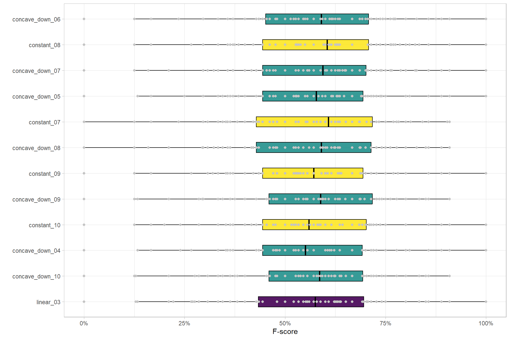
we can print the raw window function definition for those that achieved the highest F-score
agg_temp %>%
dplyr::filter(f_score_rank<=5) %>%
dplyr::arrange(f_score_rank) %>%
dplyr::pull(ws_fn_nm) %>%
purrr::set_names() %>%
# purrr::map(\(nm) purrr::pluck(get_ws_fn_list_ans, nm))
purrr::map(function(nm){
fn <- purrr::pluck(get_ws_fn_list_ans, nm)
dplyr::tibble(
ws_fn_nm = nm
, def = paste(format(fn), collapse = "\n")
)
}) %>%
purrr::list_rbind() %>%
dplyr::inner_join(
agg_temp %>%
dplyr::select(ws_fn_nm, f_score_mean, recall_mean, precision_mean) %>%
dplyr::mutate(
dplyr::across(
dplyr::where(is.numeric)
, ~ scales::percent(.x,accuracy = 0.1)
)
)
) %>%
dplyr::relocate(def,.after = dplyr::everything()) %>%
kableExtra::kbl(
caption = "WFSI Eglin Air Force Base top ITD window functions"
, col.names = c(
"function<br>name"
, "F-score<br>(mean)"
, "recall<br>(mean)"
, "precision<br>(mean)"
, "function<br>definition"
)
, escape = F
) %>%
kableExtra::kable_styling() %>%
# make r line breaks (\n) and use monospace font for code
kableExtra::column_spec(5, monospace = T, extra_css = "white-space: pre;")|
function name |
F-score (mean) |
recall (mean) |
precision (mean) |
function definition |
|---|---|---|---|---|
| concave_down_06 | 57.6% | 58.4% | 63.8% | function (x) dplyr::case_when(base::is.na(x) ~ 0.5, (0.5 + ((7 - 0.5) * x)/(8.89655172413793 + x)) < 0.5 ~ 0.5, (0.5 + ((7 - 0.5) * x)/(8.89655172413793 + x)) > 7 ~ 7, TRUE ~ (0.5 + ((7 - 0.5) * x)/(8.89655172413793 + x))) |
| constant_08 | 57.4% | 59.0% | 62.6% | function (x) dplyr::case_when(base::is.na(x) ~ 0.5, TRUE ~ 4) |
| concave_down_07 | 57.2% | 59.2% | 61.9% | function (x) dplyr::case_when(base::is.na(x) ~ 0.5, (0.5 + ((7 - 0.5) * x)/(10.4008620689655 + x)) < 0.5 ~ 0.5, (0.5 + ((7 - 0.5) * x)/(10.4008620689655 + x)) > 7 ~ 7, TRUE ~ (0.5 + ((7 - 0.5) * x)/(10.4008620689655 + x))) |
| concave_down_05 | 57.1% | 56.6% | 65.3% | function (x) dplyr::case_when(base::is.na(x) ~ 0.5, (0.5 + ((7 - 0.5) * x)/(7.39224137931035 + x)) < 0.5 ~ 0.5, (0.5 + ((7 - 0.5) * x)/(7.39224137931035 + x)) > 7 ~ 7, TRUE ~ (0.5 + ((7 - 0.5) * x)/(7.39224137931035 + x))) |
| constant_07 | 57.0% | 62.6% | 57.5% | function (x) dplyr::case_when(base::is.na(x) ~ 0.5, TRUE ~ 3.5) |
nice, we’ll select the best non-constant window function for use in evaluation of the species accuracy. if we were to use the constant functions, even if they are the best performing, we would likely be overfitting to this specific data set. in addition to being more in-line with real-world tree height-to-crown relationships, the variable window functions are likely more broadly applicable
project_data_df <- project_data_df %>%
dplyr::mutate(
best_ws_fn_nm = ifelse(
tolower(data_site_nm)=="wfsi_eglinafb"
, agg_temp %>%
dplyr::filter(ws_type!="constant") %>%
dplyr::arrange(desc(f_score_mean),desc(f_score_median),desc(recall_mean),desc(precision_mean)) %>%
dplyr::slice(1) %>%
dplyr::pull(ws_fn_nm)
, ""
)
)
# project_data_df %>% dplyr::glimpse()we can process more of the CHM data using only this selected window function within cloud2trees::raster2trees() and we’ll also estimate DBH (cloud2trees::trees_dbh()) and relative tree height. For relative tree height, I have defined a custom function using a highly efficient data processing routine with RANN::nn2() which kd-tree to find the p number of near neighbours for each point in an input/output dataset; the advantage of the kd-tree is that it runs in O(M log M) time. This custom function is for eventual integration into cloud2trees::trees_competition().
# ?RANN::nn2
# ?cloud2trees::trees_competition
competition_radius_m <- sqrt((30*30*2*2)/pi)
get_relative_height_fn <- function(df, radius) {
# Use the X and Y coordinates of the reference to build the tree.
coords_temp <-
df %>%
sf::st_drop_geometry() %>%
sf::st_as_sf(coords = c("tree_x", "tree_y"), crs = sf::st_crs(df), remove = F) %>%
dplyr::mutate(
X = sf::st_coordinates(.)[,1] %>% as.numeric()
, Y = sf::st_coordinates(.)[,2] %>% as.numeric()
) %>%
dplyr::select(X,Y) %>%
sf::st_drop_geometry()
# coords_temp %>% dplyr::glimpse()
# perform a fixed-radius search using RANN::nn2
# ?RANN::nn2
nn_ans_temp <- RANN::nn2(
# the point cloud xy data (builds the kd-tree on this)
data = coords_temp
# the seed point xy data (number of columns must be the same as data)
, query = coords_temp
# maximum number of neighbors to find per query
, k = nrow(coords_temp)
# the search radius (rcyl)
, radius = radius
, searchtype = "radius"
)
# nn_ans_temp %>% dplyr::glimpse()
# nn_ans_temp$nn.idx[1:19,2:22]
# iterate through the results to compute metrics
w_ht <-
1:nrow(df) %>%
purrr::map(
function(i) {
# which seed?
which_seed <- df %>% dplyr::slice(i)
# get indices of points in the current radius (0 means no point found)
# rad_pts <- nn_ans_temp$nn.idx[i, 2:ncol(nn_ans_temp$nn.idx)] # filter out self-idx in col 1
rad_pts <- nn_ans_temp$nn.idx[i, ] # DON'T filter out self-idx in col 1
rad_pts <- rad_pts[rad_pts > 0]
# if no other points, it's the tallest
if (dplyr::coalesce(length(rad_pts),0) < 2) {
return(
which_seed %>% dplyr::mutate(rel_tree_height_m = 1)
)
}
# get ht values using the indices
ht_values <- df$tree_height_m[rad_pts]
# relative ht
my_rel_ht <- which_seed$tree_height_m / max(ht_values,na.rm=T)
return(
which_seed %>% dplyr::mutate(rel_tree_height_m = my_rel_ht)
)
}
) %>%
dplyr::bind_rows()
return(w_ht)
}
# get_relative_height_fn_ans_temp <-
# get_relative_height_fn(
# df = wfsi_eglinafb_ws_pred_trees %>% dplyr::slice_sample(n=555)
# # radius to roughly match area used for relative height from TreeMap training data
# # 30*30*3*3 = 8100 square meters = size of 30 m raster cell with moving window of 3 in terra::focal()
# # .... but we'll go a little smaller because we're confident in the ITD trees and heights
# # .... whereas we're not so confident in the FIA TreeMap data
# , radius = competition_radius_m # sqrt((30*30*2*2)/pi) # a = pi*r^2 >> r = sqrt(a/pi)
# )
# get_relative_height_fn_ans_temp %>% dplyr::glimpse()
# get_relative_height_fn_ans_temp %>% sf::st_drop_geometry() %>% dplyr::select(rel_tree_height_m) %>% summary()full CHM data processing
c2t_process_dir_temp <-
project_data_df %>%
dplyr::filter(tolower(data_site_nm)=="wfsi_eglinafb") %>%
dplyr::pull(c2t_process_dir)
fnm_temp <- file.path(c2t_process_dir_temp,"best_ws_pred_trees.gpkg")
project_data_df <- project_data_df %>%
dplyr::mutate(
best_ws_pred_trees_fnm = ifelse(c2t_process_dir==c2t_process_dir_temp, fnm_temp, "")
)
###############################################################################################
###############################################################################################
### raster2trees that best ws fn
###############################################################################################
###############################################################################################
if(!file.exists(fnm_temp)){
ws_temp <- project_data_df %>%
dplyr::filter(c2t_process_dir==c2t_process_dir_temp) %>%
dplyr::slice(1) %>%
dplyr::pull(best_ws_fn_nm)
pred_trees_temp <-
1:nrow(wfsi_eglinafb_plots) %>%
# .[1:3] %>%
purrr::map(
\(x)
ws_testtest_fn(
chm = chm_list$WFSI_EglinAFB
, buffer = (competition_radius_m+3) # !!!!! this is being increased significantly to get relative height + 3 for 6 m crown width buffer
, plot_sf =
wfsi_eglinafb_plots %>%
dplyr::ungroup() %>%
dplyr::slice(x) %>%
sf::st_union()
# a named list of functions ex: cloud2trees::itd_ws_functions()
, ws_fn_list = get_ws_fn_list_ans %>% purrr::keep_at(ws_temp) ### !!!!! only the best
)
) %>%
purrr::list_rbind(names_to = "plot_dta_idx")
# pred_trees_temp %>% dplyr::glimpse()
# add plot id
pred_trees_temp <-
pred_trees_temp %>%
dplyr::left_join(
wfsi_eglinafb_plots %>%
dplyr::mutate(plot_dta_idx=dplyr::row_number()) %>%
sf::st_drop_geometry() %>%
dplyr::select(plot_dta_idx,plot_id)
, by = "plot_dta_idx"
) %>%
# make sure geom
sf::st_set_geometry("geometry")
# pred_trees_temp %>% dplyr::glimpse()
# get dbh
pred_trees_temp_dbh_temp <-
pred_trees_temp %>%
# this is because we did tree detection by plot
dplyr::rename(xxxtreeID=treeID) %>%
dplyr::mutate(
treeID = dplyr::row_number() %>% as.character()
) %>%
cloud2trees::trees_dbh()
# pred_trees_temp_dbh_temp %>% dplyr::glimpse()
# get rh
pred_trees_temp_rh_temp <-
# have to do this by plot so that all trees are not included
unique(pred_trees_temp$plot_dta_idx) %>%
purrr::map(
\(idx)
pred_trees_temp %>%
dplyr::filter(plot_dta_idx==idx) %>%
get_relative_height_fn(radius = competition_radius_m)
) %>%
purrr::list_rbind()
# pred_trees_temp_rh_temp %>% dplyr::glimpse()
# pred_trees_temp_rh_temp %>%
# ggplot2::ggplot() +
# ggplot2::geom_point(ggplot2::aes(x = tree_height_m, y=rel_tree_height_m)) +
# ggplot2::facet_wrap(facets=dplyr::vars(plot_id))
# add to trees
pred_trees_temp <-
pred_trees_temp %>%
dplyr::mutate(
join_id = dplyr::row_number() %>% as.character()
) %>%
dplyr::left_join(
pred_trees_temp_dbh_temp %>%
sf::st_drop_geometry() %>%
dplyr::mutate(
join_id = as.character(treeID)
) %>%
dplyr::select(
join_id, tidyselect::starts_with("fia_est_dbh"), dbh_cm
)
, by = "join_id"
) %>%
dplyr::select(-c(join_id)) %>%
dplyr::left_join(
pred_trees_temp_rh_temp %>%
sf::st_drop_geometry() %>%
dplyr::select(
plot_dta_idx,treeID,rel_tree_height_m
)
, by = dplyr::join_by(plot_dta_idx,treeID)
)
# pred_trees_temp %>% dplyr::glimpse()
# save
sf::st_write(pred_trees_temp, dsn = fnm_temp, quiet = T, append = F)
}else{
pred_trees_temp <- sf::st_read(fnm_temp, quiet = T)
}
# pred_trees_temp %>% dplyr::glimpse()
###############################################################################################
###############################################################################################
### now we need to do the matching
# again to only keep trees in plots for individual tree species comparisons
###############################################################################################
###############################################################################################
im_temp <-
plot_iter_instance_match_fn(
ref_plots = ref_plots_list[["WFSI_EglinAFB"]]
, ref_pts = ref_trees_list[["WFSI_EglinAFB"]]
, pred_polys = pred_trees_temp
, min_ht_m = NA
, min_dbh_cm = 10
)
# im_temp %>% dplyr::glimpse()
# add to the ref trees list
nm_temp <- project_data_df %>%
dplyr::filter(tolower(data_site_nm)=="wfsi_eglinafb") %>%
dplyr::pull(data_site_nm)
pred_ref_tree_match_list[[nm_temp]] <- im_temp
###############################################################################################
###############################################################################################
### save to the pred trees
###############################################################################################
###############################################################################################
# let's also save the plot-level ITD predictions for this ws
pred_trees_list[[nm_temp]] <-
pred_trees_temp %>%
# which ws
dplyr::filter(
ws_fn_nm %in% (
project_data_df %>%
dplyr::filter(tolower(data_site_nm)=="wfsi_eglinafb") %>%
dplyr::pull(best_ws_fn_nm)
)
) %>%
# filter for trees used in instance matching
# which included thresholds used for measuring field trees
# and plot spatial alignment
dplyr::inner_join(
pred_ref_tree_match_list[[nm_temp]] %>%
dplyr::select(plot_id,ws_fn_nm,pred_treeID) %>%
dplyr::filter(!is.na(pred_treeID)) %>%
dplyr::rename(treeID=pred_treeID)
, by = dplyr::join_by(plot_id,ws_fn_nm,treeID)
)
# pred_trees_list3.0.4 Species/Genus Prediction Method
for some context of the primary objective of this analysis, here is what we said in the cloud2trees manuscript (a draft of the manuscript which may be different than what was actually published):
However, taxonomic differentiation using airborne lidar alone remains one of the most technically challenging aspects of forest inventory workflows (White et al., 2016, 2025; Fassnacht et al., 2024). In practice, genus-level distinction is often more realistic when relying on remote sensing and supplemental spatial data (Vauhkonen et al., 2014b). As a practical, computationally efficient approach, future research could evaluate predicting tree-level species or genus for potential integration into cloud2trees by leveraging supplemental spatial datasets. Testing could evaluate either using tree lists from FIA plots linked through a spatial overlay with TreeMap (Houtman et al., 2025) to train a taxonomic classification model based on structural and competition metrics shared between FIA and cloud2trees tree lists, or by proportionally assigning species using BigMap species-level proportional biomass raster data (Wilson et al., 2012, 2018). Incorporating finer-scale taxonomic classification than the currently implemented FIA forest type groups into the cloud2trees tree list will enable the integration of detailed biomass equations such as the National Scale Volume Biomass system (NSVB; Westfall et al., 2024) and other allometries that require species- or genera-level information (e.g., Réjou‐Méchain et al., 2017; Gonzalez‐Akre et al., 2022).
cloud2trees does not currently include functionality to attach species to it’s tree list. there are a few paths forward for performing species-specific workflows with the cloud2trees tree list:
the proposed method which we are evaluating presently, will predict tree-level species using the TreeMap imputed FIA plot tree list to build a species classification model based on height and tree location to attach tree species to our tree list. The model will inherently account for the proportional distribution of different species.
early testing of the proposed method used a bayesian hierarchical model grouped by imputed FIA plot identifier that allows the intercept and the slope of height to vary by plot took quite a while to run for a relatively small area (~20-30 mins). as such, we are going to use a random forest (RF) classifier to enable more computationally efficient classification. cloud2trees already implements random forest models to model missing HMD and CBH values that were not successfully extracted from the point cloud and uses a model averaging method that subsamples the training data (to reduce model fit times), estimates the model several times with different subsamples, then model averages the predictions. Because the species is not a metric variable that can be averaged, we’ll use the same method but employ a model majority voting system instead. we can do this with some of the cloud2trees built-in functionality.
ultimately, if the proposed species/genera classification method achieves decent accuracy results, it could be integrated into the cloud2trees framework as cloud2trees::trees_species(), for example. this function would take an input spatial tree list and attach the predicted species/genera
3.0.4.1 Training Data
load in the TreeMap data and clip to our trees as in cloud2trees::trees_dbh()
# let's make a function to standardize this process since we'll be using it in more than one `cloud2trees::trees_*` function now
treemap_data_loader <- function(sf_poly, input_treemap_dir = NULL) {
####################################################################
# check external data
####################################################################
# find external data
find_ext_data_ans <- cloud2trees:::find_ext_data(
input_treemap_dir = input_treemap_dir
)
# if can't find external treemap data
if(is.null(find_ext_data_ans$treemap_dir)){
stop(paste0(
"Treemap data has not been downloaded to package contents. Use `get_treemap()` first."
, "\nIf you supplied a value to the `input_treemap_dir` parameter check that directory for data."
))
}
#treemap files
treemap_data_finder_ans <- cloud2trees:::treemap_data_finder(find_ext_data_ans$treemap_dir)
# treemap_data_finder_ans$which_treemap
# treemap_data_finder_ans$treemap_trees
# treemap_data_finder_ans$treemap_rast
####################################################################
# check polygons
####################################################################
if(inherits(sf_poly, "sfc")){sf_poly <- sf::st_as_sf(sf_poly)}
if(!inherits(sf_poly, "sf")){stop("must include `sf` data object in 'sf_poly'")}
if( !all(sf::st_is(sf_poly, type = c("POLYGON", "MULTIPOLYGON"))) ){
stop(paste0(
"`sf_poly` data must be an `sf` class object with POLYGON geometry (see [sf::st_geometry_type()])"
))
}
sf_poly <- sf_poly %>% dplyr::ungroup() %>% sf::st_union()
####################################################################
# read in treemap data
####################################################################
# read in treemap data
# read in treemap (no memory is taken)
treemap_rast <- terra::rast(treemap_data_finder_ans$treemap_rast)
# check study boundary against the raster
# the resulting matrix will have a true value where an intersection exists
intersection_result <- terra::relate(
x = sf_poly %>%
sf::st_transform(terra::crs(treemap_rast)) %>%
terra::vect()
, y = treemap_rast
, relation = "intersects"
)
if(!any(intersection_result)) {
stop(paste0(
"The search area does not overlap with an area within CONUS."
, "\n.... If provided data in `study_boundary` ensure that it overlaps with CONUS"
, "\n.... If did not provide data in `study_boundary` ensure that the `tree_list` data overlaps with CONUS"
))
}
# calculate buffer based on the expected window size used for any terra::focal operations
ws_temp <- 5
buffer_temp <- ((ws_temp-1)/2)*terra::res(treemap_rast)[1]
### filter treemap based on las...rast now in memory
treemap_rast <- treemap_rast %>%
terra::crop(
sf_poly %>%
sf::st_transform(terra::crs(treemap_rast)) %>%
sf::st_buffer(buffer_temp) %>%
terra::vect()
) %>%
terra::subset(1)
# ggplot(treemap_rast %>% as.data.frame(xy=T) %>% rename(f=3)) +
# geom_tile(aes(x=x,y=y,fill=as.factor(f))) +
# scale_fill_viridis_d(option = "turbo") +
# theme_light() + theme(legend.position = "none")
# check for all NA's
notna_cells <- any( terra::global(treemap_rast, fun = "anynotNA") )
if( !notna_cells ){
stop(paste0(
"The search area does not overlap with a forested area within CONUS. Cannot estimate DBH."
, "\n ... try expanding the `boundary_buffer` ?"
))
}
### get weights for weighting each tree in the population models
# treemap id = tm_id for linking to tabular data
tm_id_weight_temp <- treemap_rast %>% ## works
terra::values() %>%
table() %>%
dplyr::as_tibble() %>%
dplyr::rename(tm_id=1,tree_weight=n) %>%
dplyr::mutate(tm_id = cloud2trees:::as_character_safe(tm_id))
# tm_id_weight_temp
############################################################################
### get a stability weight of the imputed plot id's
############################################################################
# when we consider the tree composition of an entire forest stand we expect TreeMap
# to generally get the main species and forest type correct
# but for each 30m raster cell (i.e. the plot location that we get the X and Y coordinates for the tree list used for training from)
# we expect it to be less accurate with a cell potentially being a completely incorrect representation of the
# actual ground setting. As such, we we’ll weight the individual tree records based on the stability of
# the imputed plot id’s looking over a window surrounding the focal cell. Specifically, we’ll calculate
# the proportion of surrounding cells (5x5) that share the same imputed plot id as the focal cell
# and use this weight as a measure of TreeMap’s predicted stability to place less weight
# on plots that occur infrequently and more weight on plots that occur frequently.
treemap_id_rast <-
treemap_rast %>%
terra::catalyze() %>% # to numeric
terra::subset(1)
treemap_prop_rast_temp <-
treemap_id_rast %>%
terra::focal(
# # 5x5 = 2.25 ha; 3x3 = 0.81 ha
w = ws_temp
, fun = match_focal_cells_fn # add to cloud2trees:::
# , na.poicy = "omit"
, na.rm = T
) %>%
setNames("stability_weight")
# treemap_prop_rast_temp %>% terra::hist()
############################################################################
### get the TreeMap FIA tree list for only the plots included
############################################################################
if(treemap_data_finder_ans$which_treemap==2022){
treemap_cols <- c(
"TM_ID"
, "PLT_CN"
, "SPECIES_SYMBOL"
, "STATUSCD"
, "DIA"
, "HT"
, "CR" # crown ratio
)
}else if(treemap_data_finder_ans$which_treemap==2016){
treemap_cols <- c(
"tm_id"
, "CN"
, "SPECIES_SYMBOL"
, "STATUSCD"
, "DIA"
, "HT"
, "CR" # crown ratio
)
}else{
stop("unknown TreeMap vintage")
}
### read it
# treemap_data_finder_ans$treemap_trees
treemap_trees_df <-
readr::read_csv(
treemap_data_finder_ans$treemap_trees
, col_select = treemap_cols
, progress = F
, show_col_types = F
) %>%
dplyr::rename_with(tolower)
# rename cn to fit with original table str
if(treemap_data_finder_ans$which_treemap==2022){
treemap_trees_df <- treemap_trees_df %>% dplyr::rename(cn = plt_cn)
}
# clean it
treemap_trees_df <-
treemap_trees_df %>%
dplyr::mutate(
cn = cloud2trees:::as_character_safe(cn)
, tm_id = cloud2trees:::as_character_safe(tm_id)
, cr = ifelse(cr>100|cr<0,NA,cr)*0.01
) %>%
dplyr::inner_join(
tm_id_weight_temp
, by = dplyr::join_by("tm_id")
) %>%
dplyr::filter(
# keep live trees only: 1=live;2=dead
statuscd == 1
& !is.na(dia)
& !is.na(ht)
& !is.na(tree_weight)
) %>%
dplyr::mutate(
dbh_cm = dia*2.54
, tree_height_m = ht*0.3048
, tm_id = as.factor(tm_id)
, species_symbol = factor(species_symbol)
# # normalize ht
# , ht_wt_mean = sum(tree_height_m * tree_weight) / sum(tree_weight)
# , ht_wt_sd = sqrt( sum(tree_weight * (tree_height_m - ht_wt_mean)^2 ) / sum(tree_weight) )
# , ht_z = (tree_height_m - ht_wt_mean) / ht_wt_sd
) %>%
dplyr::select(-c(statuscd,dia,ht,cr)) # maybe we can use cr in a future version with and NSUR approach
# treemap_trees_df %>% dplyr::glimpse()
# check FIA model data
if(dplyr::coalesce(nrow(treemap_trees_df),0)==0){
stop(paste0(
"No trees in Treemap data. Ensure that "
, "\nIf provided data in `study_boundary` ensure that it is located in the continental US"
, "\nIf did not provide data in `study_boundary` ensure that the `tree_list` data has is located in the continental US"
))
}
# we need the spatial information from the raster...
############################################################################
### attach spatial information from raster to trees
############################################################################
# create the tree list with trees assigned the X and Y of the raster cell and
# for imputed plot id's the specific tree will appear multiple times based on
# the number of times the plot is replicated within the area of interest but
# each tree will have a different X,Y and stability weight based on the surrounding imputed plots
treemap_trees_spatial_df <-
treemap_id_rast %>%
terra::as.data.frame(xy = T, cells = T) %>%
dplyr::rename(tm_id=4) %>%
# add on weights based on moving window stability of imputed plot
dplyr::left_join(
treemap_prop_rast_temp %>%
terra::as.data.frame(xy = F, cells = T)
, by = "cell"
) %>%
dplyr::mutate(
tm_id = cloud2trees:::as_character_safe(tm_id)
# clean stability_weight
, stability_weight = ifelse(stability_weight>1,1,stability_weight) %>% dplyr::coalesce(0.001)
) %>%
# dplyr::glimpse()
# add on the tree data in which a row is unique by tm_id and the tree (which doesn't have an id so we'll fake one)
dplyr::inner_join(
treemap_trees_df %>%
dplyr::ungroup() %>%
dplyr::mutate(
tree_id = dplyr::row_number()
, tm_id = cloud2trees:::as_character_safe(tm_id)
)
, by = "tm_id"
, relationship = "many-to-many"
) %>%
# a row is now unique by x,y,tree_id resulting in the number of rows per tree_id = tm_id_weight_temp$tree_weight
dplyr::mutate(
# to factor
# tm_id = forcats::fct_relevel(tm_id, levels(treemap_trees_df$tm_id) ) ##!!!!! do we need this?
species_symbol = factor(species_symbol)
# slightly jitter the tree x,y so that RF doesn't lock-in on grid pattern from raster
# jitter within the 30m cell +/- 15 m
, x = x + stats::runif(
dplyr::n()
, min = -(terra::res(treemap_rast)[1]/2)
, max = (terra::res(treemap_rast)[1]/2)
)
, y = y + stats::runif(
dplyr::n()
, min = -(terra::res(treemap_rast)[1]/2)
, max = (terra::res(treemap_rast)[1]/2)
)
)
############################################################################
### add max tree height in moving window to create relative height measurement
############################################################################
# a template raster
rast_temp <- terra::subset(treemap_rast,1)
# replace cell values with maximum height from tree data
values(rast_temp) <-
dplyr::tibble(
cell = c(1:terra::ncell(rast_temp))
) %>%
# left join to leave all NA as NA
dplyr::left_join(
treemap_trees_spatial_df %>%
sf::st_drop_geometry() %>%
dplyr::group_by(cell) %>%
dplyr::summarise(tree_height_m = max(tree_height_m,na.rm=F)) %>%
dplyr::arrange(cell)
, by = "cell"
) %>%
dplyr::pull(tree_height_m)
# rast_temp %>% terra::plot()
# moving window with window size of 3
# rast_temp %>% terra::focal(w = 3, fun=max, na.rm=T) %>% terra::plot()
max_ht_df <-
rast_temp %>%
terra::focal(w = 3, fun=max, na.rm=T) %>%
terra::as.data.frame(cells = T) %>%
dplyr::rename(max_tree_height_m = 2)
# add max ht to spatial tree data
treemap_trees_spatial_df <-
treemap_trees_spatial_df %>%
dplyr::left_join(max_ht_df, by = "cell") %>%
dplyr::mutate(
rel_tree_height_m = tree_height_m/max_tree_height_m
, rel_tree_height_m = ifelse(rel_tree_height_m>1,1,rel_tree_height_m)
) %>%
# make spatial
sf::st_as_sf(coords = c("x", "y"), crs = terra::crs(treemap_rast), remove = F)
# dplyr::glimpse(treemap_trees_spatial_df)
# treemap_trees_spatial_df %>% ggplot2::ggplot(ggplot2::aes(x=x,y=y,color=species_symbol)) + ggplot2::geom_point() + ggplot2::theme_void()
# treemap_trees_spatial_df %>% ggplot2::ggplot(ggplot2::aes(x=x,y=y,color=stability_weight)) + ggplot2::geom_point() + ggplot2::theme_void()
# treemap_trees_spatial_df %>%
# ggplot2::ggplot(ggplot2::aes(x=x,y=y,color=factor(cell))) +
# ggplot2::geom_point() +
# ggplot2::scale_color_manual(values = sample(
# viridis::turbo(n=length(unique(treemap_trees_spatial_df$cell)))
# )
# ) +
# ggplot2::theme_void() +
# ggplot2::theme(legend.position = "none")
return(list(
treemap_trees_df = treemap_trees_df
, treemap_rast = treemap_rast
, treemap_trees_spatial_df = treemap_trees_spatial_df
, treemap_prop_rast = treemap_prop_rast_temp
))
}
# add to cloud2trees:::
# focal matrix for a x by x window
# focal_kernel_temp <- matrix(1, nrow = 3, ncol = 3)
# focal_kernel_temp
# length(focal_kernel_temp)*terra::res(treemap_rast) %>% prod() %>% `/`(10000)
# 5x5 = 2.25 ha; 3x3 = 0.81 ha
# custom window fn to get prop of surrounding cells matching focal value
# ?terra::focal
match_focal_cells_fn <- function(v, ...) {
if(all(is.na(v))){ return(NA) }
# center index of the window vector
center_idx <- (length(v) + 1) / 2
focal_val <- v[center_idx]
if(is.na(focal_val)){ return(NA) }
# count how many cells in the window match the focal cell
n_matches <- sum(v %in% focal_val, ...)
prop_matches <- n_matches / length(v)
return(prop_matches)
}We did a few things in that function to return:
treemap_trees_df: a list of trees associated with a TreeMap imputed plot. the columntree_weightis based off of a count of how many times a imputed plot id is replicated across the area of interest. theregional_dbh_height_model_training_data.csvfile written to the point cloud processing directory when we execute cloud2trees::cloud2trees(…, estimate_tree_dbh = T) matches this data.treemap_rast: The TreeMap raster data cropped to the area of interest with a buffertreemap_trees_spatial_df: a spatial list of trees associated with a TreeMap imputed plot. A row is now unique byx,y,tree_idresulting in the number of rows per tree determined by thetree_weight.treemap_prop_rast: A raster of the TreeMap imputed plot stability. We expect the TreeMap imputed plots to be more accurate as we look over a broader area with accuracy decreasing at smaller scales. That is, when we consider the tree composition of an entire forest stand we expect TreeMap to generally get the main species and forest type correct but for each 30m raster cell (i.e. the plot location that we get the X and Y coordinates for the tree list used for training from) we expect it to be less accurate with a cell potentially being a completely incorrect representation of the actual ground setting. As such, we we weight the individual tree records based on the stability of the imputed plot id’s looking over a window surrounding the focal cell (stability_weightintreemap_trees_spatial_df). Specifically, we calculate the proportion of surrounding cells (5x5) that share the same imputed plot id as the focal cell and use this weight as a measure of TreeMap’s predicted stability to place less weight on plots that occur infrequently and more weight on plots that occur frequently.
# test to get the treemap data for our aoi
treemap_data_loader_ans <-
pred_trees_list$WFSI_EglinAFB %>%
dplyr::ungroup() %>%
sf::st_union() %>%
sf::st_bbox() %>%
sf::st_as_sfc() %>%
treemap_data_loader()Check out the TreeMap raster of forest types for our area of interest defined using the spatial extent of the predicted trees
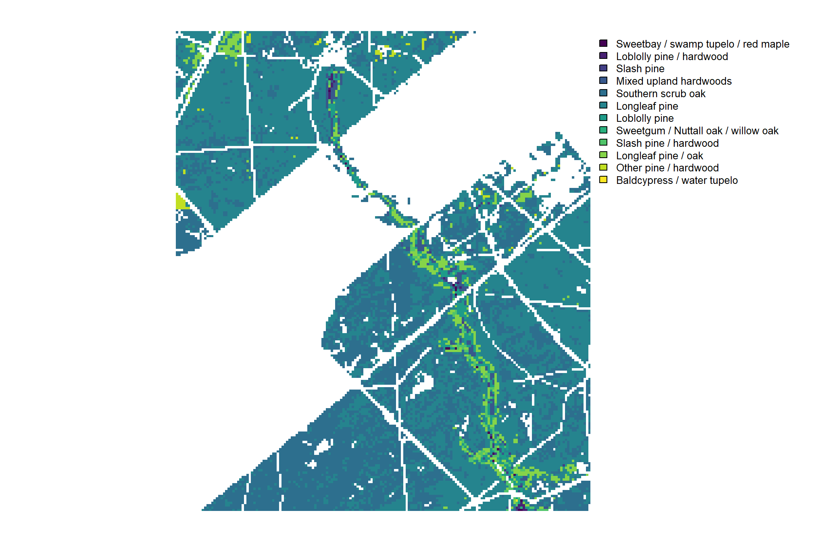
here is the stability of those imputed TreeMap FIA plot id’s
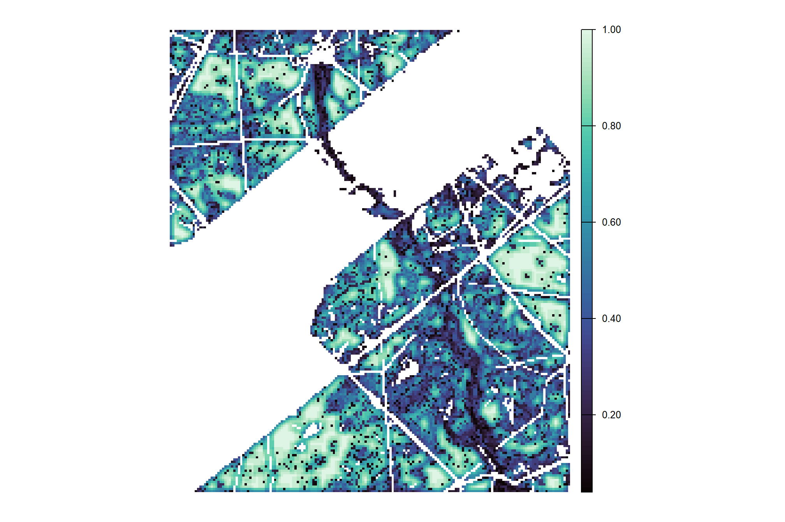
lets’ review the spatial tree list we’ll use for training data which comes from the TreeMap FIA imputed plots
what’s in the FIA tree list using the TreeMap imputed plots filtered for our area of interest?
## Rows: 334,609
## Columns: 14
## $ cell <dbl> 1, 1, 1, 1, 1, 1, 1, 1, 1, 1, 1, 1, 3, 3, 3, 3, 3, 3…
## $ x <dbl> 883634.7, 883628.2, 883608.1, 883632.2, 883632.5, 88…
## $ y <dbl> 875457.9, 875468.6, 875447.3, 875474.4, 875447.7, 87…
## $ tm_id <chr> "36748", "36748", "36748", "36748", "36748", "36748"…
## $ stability_weight <dbl> 0.04, 0.04, 0.04, 0.04, 0.04, 0.04, 0.04, 0.04, 0.04…
## $ cn <chr> "289514966489998", "289514966489998", "2895149664899…
## $ species_symbol <fct> QULA2, QULA2, QULA2, QULA2, QULA2, PIPA2, QUVI, PIPA…
## $ tree_weight <int> 7164, 7164, 7164, 7164, 7164, 7164, 7164, 7164, 7164…
## $ dbh_cm <dbl> 4.318, 2.540, 5.588, 6.096, 8.382, 2.540, 5.588, 3.8…
## $ tree_height_m <dbl> 3.6576, 2.7432, 5.7912, 5.7912, 5.7912, 2.1336, 4.57…
## $ tree_id <int> 183, 184, 185, 186, 187, 188, 189, 190, 191, 192, 19…
## $ max_tree_height_m <dbl> 19.5072, 19.5072, 19.5072, 19.5072, 19.5072, 19.5072…
## $ rel_tree_height_m <dbl> 0.1875000, 0.1406250, 0.2968750, 0.2968750, 0.296875…
## $ geometry <POINT [m]> POINT (883634.7 875457.9), POINT (883628.2 875…species distribution?
treemap_data_loader_ans$treemap_trees_spatial_df %>%
sf::st_drop_geometry() %>%
dplyr::count(species_symbol) %>%
dplyr::arrange(desc(n)) %>%
dplyr::mutate(
percent=n/sum(n)
, percent = scales::percent(percent,accuracy=0.1)
, n = scales::comma(n,accuracy = 1)
) %>%
kableExtra::kbl(
caption = "TreeMap Species Distribution over Study Area"
) %>%
kableExtra::kable_styling()| species_symbol | n | percent |
|---|---|---|
| PIPA2 | 177,679 | 53.1% |
| QULA2 | 109,853 | 32.8% |
| QUVI | 12,555 | 3.8% |
| PITA | 9,700 | 2.9% |
| QUIN | 4,639 | 1.4% |
| QULA3 | 4,242 | 1.3% |
| ACRU | 3,070 | 0.9% |
| NYBI | 3,002 | 0.9% |
| TAAS | 1,822 | 0.5% |
| PIEL | 1,402 | 0.4% |
| QUMA6 | 1,250 | 0.4% |
| LIST2 | 895 | 0.3% |
| PICL | 744 | 0.2% |
| COFL2 | 706 | 0.2% |
| QUFA | 676 | 0.2% |
| QUNI | 602 | 0.2% |
| PEBO | 440 | 0.1% |
| TRSE6 | 254 | 0.1% |
| MAVI2 | 196 | 0.1% |
| ILOP | 181 | 0.1% |
| NYSY | 155 | 0.0% |
| CAAL27 | 148 | 0.0% |
| QUMI2 | 122 | 0.0% |
| QUST | 90 | 0.0% |
| QUAL | 49 | 0.0% |
| PRSE2 | 46 | 0.0% |
| MAGR4 | 24 | 0.0% |
| DIVI5 | 18 | 0.0% |
| TADI2 | 12 | 0.0% |
| NYAQ2 | 8 | 0.0% |
| QUPH | 6 | 0.0% |
| CAAQ2 | 5 | 0.0% |
| CACA18 | 5 | 0.0% |
| FRPE | 3 | 0.0% |
| GOLA | 3 | 0.0% |
| PIGL2 | 2 | 0.0% |
| QUMI | 2 | 0.0% |
| BENI | 1 | 0.0% |
| CELA | 1 | 0.0% |
| ULRU | 1 | 0.0% |
here is the spatial distribution of the species for a sample of the trees
samp_temp <- treemap_data_loader_ans$treemap_trees_spatial_df %>%
dplyr::slice_sample(n=2222)
samp_temp %>%
ggplot2::ggplot(ggplot2::aes(x=x,y=y,color=species_symbol)) +
ggplot2::geom_point(alpha = 0.6) +
ggplot2::scale_color_viridis_d(option = "turbo") +
ggplot2::theme_void()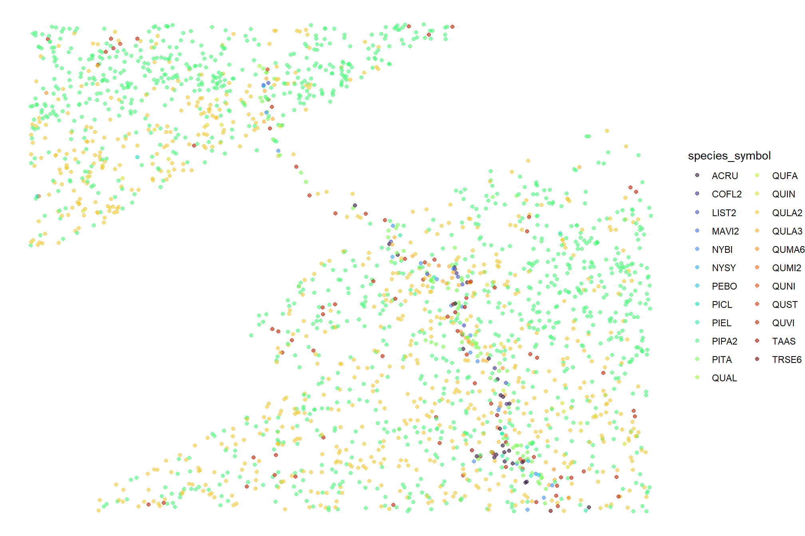
that is difficult to read, let’s actually print the species symbol
samp_temp %>%
ggplot2::ggplot(
mapping = ggplot2::aes(x = x, y = y, fill = species_symbol, color = species_symbol, label = species_symbol)
) +
# ggplot2::geom_hline(yintercept = median(treemap_data_loader_ans$treemap_trees_spatial_df$y) , color = "black") +
# ggplot2::geom_vline(xintercept = median(treemap_data_loader_ans$treemap_trees_spatial_df$x), color = "black") +
ggplot2::geom_text(size = 2.5) +
ggplot2::scale_color_viridis_d(option = "turbo") +
ggplot2::labs(
x = "x", y = "y"
) +
ggplot2::theme_void() +
ggplot2::theme(
legend.position = "none"
)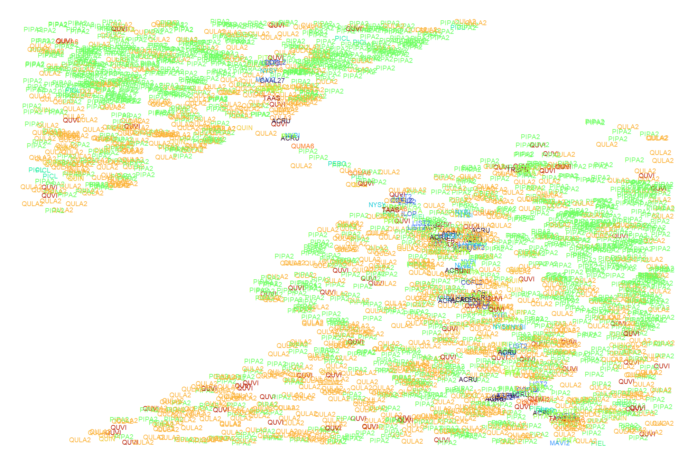
let’s check out the stability_weight distribution which is unique for each raster cell in the data extent
stab_temp <-
# stability_weight should be unique by cell
treemap_data_loader_ans$treemap_trees_spatial_df %>%
sf::st_drop_geometry() %>%
dplyr::distinct(cell,stability_weight) %>%
# add on forest type
dplyr::left_join(
treemap_data_loader_ans$treemap_rast %>%
terra::as.data.frame(xy=T, cells = T) %>%
dplyr::select(cell, ForTypName) %>%
dplyr::rename(f_type=ForTypName)
) %>%
dplyr::mutate(
f_type = f_type %>%
forcats::fct_drop() %>%
forcats::fct_reorder(stability_weight,.fun = "median") %>%
as.ordered()
)
stab_temp %>%
# dplyr::glimpse()
ggplot2::ggplot(
mapping = ggplot2::aes(y = f_type, x = stability_weight, fill = f_type)
) +
ggplot2::geom_boxplot(
width = 0.4
, alpha=0.9
, outliers = F
, color = "black"
) +
ggplot2::scale_fill_viridis_d(option = "magma",direction=-1,begin=0.1,end=0.5) +
ggplot2::labs(y="") +
ggplot2::theme_light() +
ggplot2::theme(
legend.position = "none"
, legend.direction = "horizontal"
)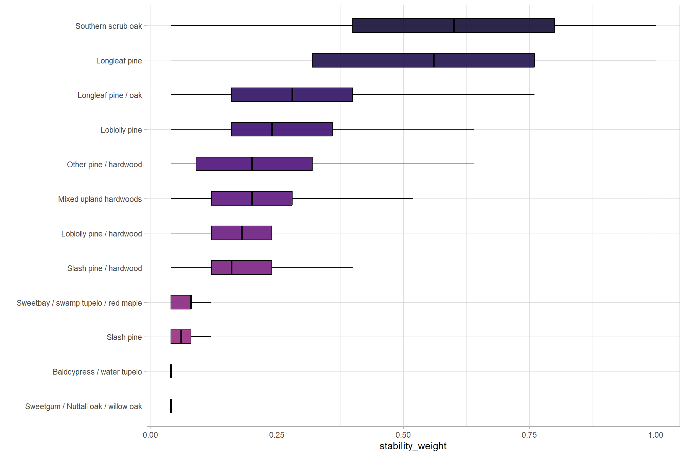
this essentially means that TreeMap is fairly confident that the study area includes Southern scrub oak and Longleaf pine
lastly, we’ll look at the relative height data for a sample of the data
focal_cell_temp <-
treemap_data_loader_ans$treemap_trees_spatial_df %>%
sf::st_drop_geometry() %>%
dplyr::filter(
stability_weight>=
quantile(treemap_data_loader_ans$treemap_trees_spatial_df$stability_weight,probs=0.9)
) %>%
dplyr::count(cell) %>%
dplyr::slice_max(order_by = n, n = 10, with_ties = F) %>%
dplyr::slice_sample(n=1) %>%
dplyr::pull(cell)
aoi_temp <-
treemap_data_loader_ans$treemap_trees_spatial_df %>%
dplyr::filter(cell == focal_cell_temp) %>%
sf::st_union() %>%
sf::st_centroid() %>%
sf::st_buffer(terra::res(treemap_data_loader_ans$treemap_rast)[1]) %>%
sf::st_bbox() %>%
sf::st_as_sfc()
treemap_data_loader_ans$treemap_trees_spatial_df %>%
sf::st_intersection(aoi_temp) %>%
sf::st_drop_geometry() %>%
dplyr::select(x,y,tree_height_m,rel_tree_height_m) %>%
# tidyr::pivot_longer(cols = -c(x,y)) %>%
# dplyr::glimpse()
ggplot2::ggplot(
mapping = ggplot2::aes(x=x,y=y)
) +
ggplot2::geom_point(mapping = ggplot2::aes(color = rel_tree_height_m), size = 4) +
ggplot2::scale_color_distiller(palette = "Greys", direction = 1) +
ggnewscale::new_scale_color() +
ggplot2::geom_point(mapping = ggplot2::aes(color = tree_height_m), size = 1.8) +
ggplot2::scale_color_distiller(palette = "Oranges", direction = 1) +
ggplot2::theme_void()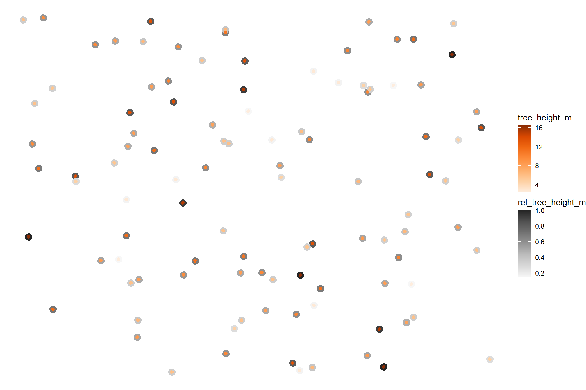
3.0.5 Predict Species/Genus Application
let’s implement a random forest model majority voting for species with the objective to reduce estimation time (compared to a Bayesian Softmax model)
tree species will be our dependent variable and the most simple model will use tree height and tree location (X and Y coordinates) as independent variables. The training FIA tree list data (identified from the TreeMap imputed plots of the area of interest) includes tree height and we’ll use the centroid of the TreeMap 30m raster cell to represent the individual tree X and Y location (i.e. each tree within the same cell will have the same coordinate). Considering the combined tree height and spatial location via a full interaction model (i.e. height*x*y) allows the model to capture how the species-height relationship varies across space.
we’ll first update the cloud2trees internal function rf_subsample_and_model_n_times to allow for categorical response data
####################################!!!!!!!!!!!!!! this is utils_rf.R in cloud2trees code
####################################!!!!!!!!!!!!!! this is utils_rf.R in cloud2trees code
####################################!!!!!!!!!!!!!! this is utils_rf.R in cloud2trees code
rf_tune_subsample <- function(
predictors
, response
, threshold = 14444
, n_subsamples = 4
, ntree_try = 44
, step_factor = 1
, improve = 0.03
) {
# set upper limit for ntreeTry
max_ntreeTry <- 122
# count the obs
n_obs <- nrow(predictors)
# set up list to store values from subsample runs
optimal_mtry_values <- numeric(as.numeric(n_subsamples))
# quiet the thing
quiet_tuneRF <- purrr::quietly(randomForest::tuneRF)
# if we don't need to subsample
if(
n_obs<=threshold
){
# get rid of missing factor levels if not in there
# results in error: "Can't have empty classes in y." from randomForest::tuneRF
if(inherits(response,"factor")){
response <- forcats::fct_drop(response)
}
# Tune on the full data if below threshold
tune_result <- quiet_tuneRF(
# randomForest::tuneRF(
y = response
, x = predictors
, ntreeTry = max_ntreeTry # this is high for data with less obs
, stepFactor = step_factor
, improve = improve
, plot = F
, trace = F
)
# just get the result
tune_result <- tune_result$result
# Extract the optimal mtry value
optimal_mtry <- tune_result %>%
dplyr::as_tibble() %>%
dplyr::filter(OOBError==min(OOBError)) %>%
dplyr::filter(dplyr::row_number() == 1) %>%
dplyr::pull(mtry) %>%
as.numeric()
}else{
# number for subsample
sample_obs <- as.numeric(threshold)
# run tuning on subsamples
for (i in 1:n_subsamples) {
# subsample
subsample_indices <- sample(x = 1:n_obs, size = sample_obs, replace = F)
subsample_predictors <- predictors[subsample_indices, ]
subsample_response <- response[subsample_indices]
# get rid of missing factor levels if not in there
# results in error: "Can't have empty classes in y." from randomForest::tuneRF
if(inherits(subsample_response,"factor")){
subsample_response <- forcats::fct_drop(subsample_response)
}
# tune on subsample
tune_result <- quiet_tuneRF(
# randomForest::tuneRF(
y = subsample_response
, x = subsample_predictors
, ntreeTry = min(as.numeric(ntree_try),max_ntreeTry)
, stepFactor = step_factor
, improve = improve
, plot = F
, trace = F
)
# just get the result
tune_result <- tune_result$result
# Extract the optimal mtry value
optimal_mtry_values[i] <- tune_result %>%
dplyr::as_tibble() %>%
dplyr::filter(OOBError==min(OOBError)) %>%
dplyr::filter(dplyr::row_number() == 1) %>%
dplyr::pull(mtry) %>%
as.numeric()
}
# Find most frequent optimal mtry
optimal_mtry <- table(optimal_mtry_values) %>%
sort(decreasing = TRUE) %>%
.[1] %>%
names() %>%
as.numeric()
}
# ensure that the mtry value is not greater than the number of predictors
optimal_mtry <- min(optimal_mtry, ncol(predictors))
# return
return(optimal_mtry)
}
################################################################################################################################################
# function to combine tuning and modelling
################################################################################################################################################
rf_tune_model <- function(
predictors
, response
, tune_threshold = 14444
, tune_n_subsamples = 4
, tune_ntree_try = 44
, tune_step_factor = 1
, tune_improve = 0.03
, ntree = 500
, weights = NULL
) {
### tuning RF model
# implements steps to mitigate very long run-times when tuning random forests models
optimal_mtry <- rf_tune_subsample(
predictors = predictors
, response = response
, threshold = tune_threshold
, n_subsamples = tune_n_subsamples
, ntree_try = tune_ntree_try
, step_factor = tune_step_factor
, improve = tune_improve
)
### Run a randomForest model
# get rid of missing factor levels if not in there
# results in error: "Can't have empty classes in y." from randomForest::tuneRF
if(inherits(response,"factor")){
response <- forcats::fct_drop(response)
}
# quiet this
quiet_rf <- purrr::quietly(randomForest::randomForest)
# run it
mod <- quiet_rf(
y = response
, x = predictors
, mtry = optimal_mtry
, na.action = na.omit
, ntree = ntree
# # weights = A vector of length same as y that are positive weights (i.e. >0 for all obs)
# # used only in sampling data to grow each tree (not used in any other calculation)
, weights = weights
)
# just get the result
mod <- mod$result
return(mod)
}
################################################################################################################################################
# function to subsample, tune, and model
################################################################################################################################################
rf_subsample_and_model <- function(
predictors
, response
, tune_threshold = 14444
, tune_n_subsamples = 4
, tune_ntree_try = 44
, tune_step_factor = 1
, tune_improve = 0.03
, mod_n_subsample = 20000
, ntree = 500
, weights = NULL
) {
if(length(response)<=mod_n_subsample){
mod <- rf_tune_model(
predictors = predictors
, response = response
, tune_threshold = tune_threshold
, tune_n_subsamples = tune_n_subsamples
, tune_ntree_try = tune_ntree_try
, tune_step_factor = tune_step_factor
, tune_improve = tune_improve
, ntree = ntree
, weights = weights
)
}else{
subsample_indices <- sample(x = 1:length(response), size = mod_n_subsample, replace = F)
subsample_y <- response[subsample_indices]
subsample_x <- predictors[subsample_indices,]
# weights
if(!is.null(weights) && !any(is.na(weights))){
subsample_w <- weights[subsample_indices]
}else{
subsample_w <- NULL
}
mod <- rf_tune_model(
predictors = subsample_x
, response = subsample_y
, tune_threshold = tune_threshold
, tune_n_subsamples = tune_n_subsamples
, tune_ntree_try = tune_ntree_try
, tune_step_factor = tune_step_factor
, tune_improve = tune_improve
, ntree = ntree
, weights = subsample_w
)
}
return(mod)
}
################################################################################################################################################
# function to subsample, tune, and model N TIMES
# iterates the subsampling and model fitting process n_iterations times
# stores the predictions from each model in a list
################################################################################################################################################
rf_subsample_and_model_n_times <- function(
predictors
, response
, tune_threshold = 14444
, tune_n_subsamples = 4
, tune_ntree_try = 44
, tune_step_factor = 1
, tune_improve = 0.03
, mod_n_subsample = 20000
, mod_n_times = 3
, ntree = 500
, weights = NULL
) {
# set up blank list
mod_list <- list()
if(length(response)<=mod_n_subsample){
mod_list[[1]] <- rf_subsample_and_model(
predictors = predictors
, response = response
, tune_threshold = tune_threshold
, tune_n_subsamples = tune_n_subsamples
, tune_ntree_try = tune_ntree_try
, tune_step_factor = tune_step_factor
, tune_improve = tune_improve
, mod_n_subsample = mod_n_subsample
, ntree = ntree
, weights = weights
)
}else{
for (i in 1:mod_n_times) {
mod_list[[i]] <- rf_subsample_and_model(
predictors = predictors
, response = response
, tune_threshold = tune_threshold
, tune_n_subsamples = tune_n_subsamples
, tune_ntree_try = tune_ntree_try
, tune_step_factor = tune_step_factor
, tune_improve = tune_improve
, mod_n_subsample = mod_n_subsample
, ntree = ntree
, weights = weights
)
}
}
return(mod_list)
}
################################################################################################################################################
# function to model average predictions using model list
# Model averaging can improve the robustness and accuracy of random forest models, especially when dealing with large datasets
# predict_df must have predictor (x) columns used to develop model
################################################################################################################################################
rf_model_avg_predictions <- function(mod_list, predict_df, levels = NULL){
mod_type_temp <- mod_list[[1]]$type
if(mod_type_temp == "classification") {
if(is.null(levels)){stop("this is a RF classifier and you need to provide `levels` based on training data")}
predicted_temp <- rf_model_vote_predictions(
mod_list = mod_list
, predict_df = predict_df
, levels = levels
)
}else{
# if (mod_type_temp == "regression") {
# get model predictions for each model
predicted_temp <-
1:length(mod_list) %>%
purrr::map(function(x){
predict(
mod_list[[x]]
, predict_df
) %>%
dplyr::as_tibble() %>%
dplyr::pull(1) %>%
dplyr::as_tibble() %>%
dplyr::rename(value=1) %>%
dplyr::mutate(id=dplyr::row_number())
}) %>%
dplyr::bind_rows()
# model average
predicted_temp <- predicted_temp %>%
dplyr::group_by(id) %>%
dplyr::summarise(
predicted = mean(value, na.rm = T)
) %>%
dplyr::ungroup() %>%
dplyr::arrange(id) %>%
dplyr::select(predicted)
}
# return
return(predicted_temp)
}
################################################################################################################################################
# !!!!! ADDED for factor dependent variable
# function to model average predictions using model list
# Model averaging can improve the robustness and accuracy of random forest models, especially when dealing with large datasets
# predict_df must have predictor (x) columns used to develop model
################################################################################################################################################
# function to vote for class based on many models
rf_model_vote_predictions <- function(mod_list, predict_df, levels=NULL){
if(is.null(levels)){stop("this is a RF classifier and you need to provide `levels` based on training data")}
# get model predictions for each model
predicted_temp <-
1:length(mod_list) %>%
purrr::map(function(x){
predict(
mod_list[[x]]
, predict_df
) %>%
dplyr::as_tibble() %>%
dplyr::pull(1) %>%
dplyr::as_tibble() %>%
dplyr::rename(value=1) %>%
# !!!!! need to restore the original factor levels impacted when we did `forcats::fct_drop(response)`
dplyr::mutate(value = factor(value, levels = levels)) %>%
# dplyr::pull(value) %>% levels()
dplyr::mutate(id=dplyr::row_number())
}) %>%
dplyr::bind_rows()
# predicted_temp %>% dplyr::glimpse()
# model vote
predicted_temp <-
predicted_temp %>%
dplyr::count(id,value) %>%
# dplyr::arrange(id,desc(n)) %>% print(n=33)
dplyr::group_by(id) %>%
dplyr::slice_max(order_by = n, n = 1, with_ties = F) %>%
dplyr::ungroup() %>%
dplyr::arrange(id) %>%
dplyr::rename(predicted=value) %>%
dplyr::select(predicted)
# return
return(predicted_temp)
}let’s estimate the RF using data subsampling and model averaging for a computationally efficient way to get estimates over broad areas with potentially large tree lists. Model averaging can improve the robustness and accuracy of random forest models, especially when dealing with large datasets.
# treemap_tree_list_df %>% dplyr::glimpse()
# make a function to model and get the predictions attached to the tree list
get_species_symbol_predictions <- name <- function(treemap_data_loader_ans, predict_df) {
# set max FIA trees to use in each subsample
mod_n_subsample_temp <- min(nrow(treemap_data_loader_ans$treemap_trees_spatial_df)-1,22222)
# number of models to estimate with this subsample size
# go for at least 50% of training data sampled
# it's just that the individual model fits will be smaller
ntimes_temp <-
((nrow(treemap_data_loader_ans$treemap_trees_spatial_df)*0.5)/mod_n_subsample_temp) %>%
ceiling() %>%
max(6) %>%
min(66)
# ntimes_temp
# estimate
rf_spec_mod <- rf_subsample_and_model_n_times(
predictors = treemap_data_loader_ans$treemap_trees_spatial_df %>% sf::st_drop_geometry() %>% dplyr::select(x,y,tree_height_m,rel_tree_height_m)
# predictors = treemap_data_loader_ans$treemap_trees_spatial_df %>% sf::st_drop_geometry() %>% dplyr::select(x,y,tree_height_m)
, response = treemap_data_loader_ans$treemap_trees_spatial_df$species_symbol
, weights = treemap_data_loader_ans$treemap_trees_spatial_df$stability_weight
, mod_n_subsample = mod_n_subsample_temp
, mod_n_times = ntimes_temp
)
# model the missing values
# vote for class based on many models
predicted_temp <- rf_model_avg_predictions(
mod_list = rf_spec_mod
, predict_df =
predict_df %>%
sf::st_drop_geometry() %>%
sf::st_as_sf(coords = c("tree_x", "tree_y"), crs = sf::st_crs(predict_df), remove = F) %>%
sf::st_transform(terra::crs(treemap_data_loader_ans$treemap_rast)) %>%
dplyr::mutate(
x = sf::st_coordinates(.)[,1]
, y = sf::st_coordinates(.)[,2]
) %>%
sf::st_drop_geometry() %>%
dplyr::select(x,y,tree_height_m,rel_tree_height_m)
# dplyr::select(x,y,tree_height_m)
, levels = levels(treemap_data_loader_ans$treemap_trees_spatial_df$species_symbol)
)
# predicted_temp %>% dplyr::glimpse()
# predicted_temp %>% dplyr::count(predicted) %>% dplyr::arrange(desc(n)) %>% dplyr::mutate(pct=scales::percent(n/sum(n), accuracy=0.1))
# attach back to data
predict_df <- predict_df %>%
dplyr::mutate(
predicted_species_symbol = predicted_temp$predicted
, predicted_species_symbol = as.character(predicted_species_symbol)
)
return(predict_df)
}
# do it with our data
pred_trees_list$WFSI_EglinAFB <-
get_species_symbol_predictions(
treemap_data_loader_ans = treemap_data_loader_ans
, predict_df = pred_trees_list$WFSI_EglinAFB
) %>%
# for this project we'll just rename to maintain consistent across data sources
dplyr::rename(species_symbol=predicted_species_symbol)
# pred_trees_list$WFSI_EglinAFB %>%
# sf::st_drop_geometry() %>%
# dplyr::count(species_symbol) %>%
# dplyr::arrange(desc(n)) %>%
# dplyr::mutate(pct=scales::percent(n/sum(n), accuracy=0.1))let’s map predicted crowns in space colored by species for a single plot while also showing the field validation data species and the true positive matches (squares)
pred_trees_list$WFSI_EglinAFB %>%
dplyr::inner_join(
ref_plots_list$WFSI_EglinAFB %>%
dplyr::slice(4) %>%
sf::st_drop_geometry() %>%
dplyr::select(plot_id)
, by = "plot_id"
) %>%
dplyr::arrange(desc(species_symbol)) %>%
# plot it
# plt
ggplot2::ggplot() +
ggplot2::geom_sf(
data = ref_plots_list$WFSI_EglinAFB %>% dplyr::slice(4)
, fill = NA, color = "blue"
) +
ggplot2::geom_sf(
mapping = ggplot2::aes(fill = species_symbol)
, size = 0.6, alpha = 0.88
) +
ggplot2::geom_sf(
data =
ref_trees_list$WFSI_EglinAFB %>%
dplyr::inner_join(
ref_plots_list$WFSI_EglinAFB %>%
dplyr::slice(4) %>%
sf::st_drop_geometry() %>%
dplyr::select(plot_id)
, by = "plot_id"
) %>%
dplyr::inner_join(
pred_ref_tree_match_list$WFSI_EglinAFB %>%
dplyr::filter(match_grp=="true positive") %>%
dplyr::select(ref_treeID)
, by = dplyr::join_by(treeID==ref_treeID)
)
, size = 7, shape = 15, color = "gray88"
) +
ggplot2::geom_sf(
data =
ref_trees_list$WFSI_EglinAFB %>%
dplyr::inner_join(
ref_plots_list$WFSI_EglinAFB %>%
dplyr::slice(4) %>%
sf::st_drop_geometry() %>%
dplyr::select(plot_id)
, by = "plot_id"
)
, mapping = ggplot2::aes(color = species)
, size = 3
) +
ggplot2::scale_fill_viridis_d(option = "turbo", begin = 0.3, end = 0.8) +
ggplot2::scale_color_viridis_d(option = "magma", begin = 0.3, end = 0.8) +
ggplot2::labs(color="reference", fill="predicted") +
ggplot2::theme_void() +
ggplot2::theme(
legend.position = "top"
) +
ggplot2::guides(
fill = ggplot2::guide_legend(override.aes = list(shape = 15, linetype = 0, size = 6, alpha = 1))
, color = ggplot2::guide_legend(override.aes = list(shape = 15, linetype = 0, size = 6, alpha = 1, fill = NA))
)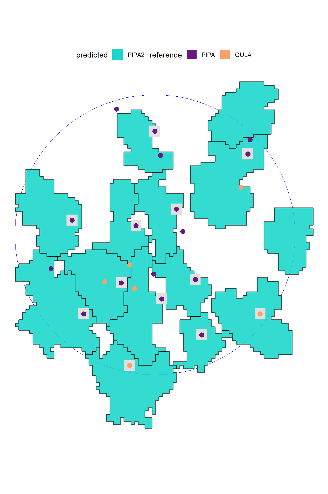
that looks decent. however, we need to standardize the species code across data sources. what even is the difference between “PIPA2” and “PIPA”?
let’s get the species code lookup table from the FIA DataMart to standardize the species code, species symbol, common name, and scientific genus and species
# holy smokes, no one knows what these numeric species codes are
# ....get reference species so a human can understand these
url_temp <- "https://apps.fs.usda.gov/fia/datamart/CSV/FIADB_REFERENCE.zip"
zip_temp <- "FIADB_REFERENCE.zip"
# dir_temp <- file.path("../data", str_remove(basename(zip_temp), "\\.[^.]+$"))
dir_temp <- file.path("c:/data/usfs/uas_lidar_n1/data", str_remove(basename(zip_temp), "\\.[^.]+$"))
# dir.exists(dir_temp)
# dl if needed
if (!dir.exists(dir_temp)){
download.file(url = url_temp, destfile = zip_temp, mode = "wb")
unzip(zipfile = zip_temp, exdir = dir_temp)
file.remove(zip_temp)
}
# read
fia_species_lookup <- readr::read_csv(file = file.path(dir_temp, "REF_SPECIES.csv"), progress = F, show_col_types = F) %>%
dplyr::rename_with(.cols = dplyr::everything(), tolower) %>%
dplyr::select(spcd, species_symbol, common_name, genus, species)
# huh
fia_species_lookup %>% dplyr::glimpse()## Rows: 2,697
## Columns: 5
## $ spcd <dbl> 7783, 7792, 7793, 7794, 7795, 7798, 7799, 7800, 7801, 7…
## $ species_symbol <chr> "MEPO5", "MERU2", "METRO", "METR5", "MEWA", "MEAM4", "M…
## $ common_name <chr> "ohia lehua", "lehua papa", "lehua", "lehua ahihi", "Ka…
## $ genus <chr> "Metrosideros", "Metrosideros", "Metrosideros", "Metros…
## $ species <chr> "polymorpha", "rugosa", "spp.", "tremuloides", "waialea…what is the correct “PIPA2”?
## # A tibble: 3 × 5
## spcd species_symbol common_name genus species
## <dbl> <chr> <chr> <chr> <chr>
## 1 8187 PIPA13 Mexican weeping pine Pinus patula
## 2 8197 PIPA12 five-needle pine Pinus parviflora
## 3 121 PIPA2 longleaf pine Pinus palustrisLet’s try to make a function that automatically maps a field-recorded species symbol which is not present in the FIA reference species table to the correct symbol. we’ll use the TreeMap data of the area to make the mapping. This will be especially important when we move into more diverse forest types where manually mapping the species codes would be very cumbersome.
clean_ref_species_fn <- function(
df_to_clean
, my_treemap_data_loader_ans
) {
# species probs
species_probs <-
my_treemap_data_loader_ans$treemap_trees_df %>%
dplyr::mutate(species_symbol = as.character(species_symbol)) %>%
dplyr::group_by(species_symbol) %>%
dplyr::summarise(n = sum(tree_weight)) %>%
# just the first 4 characters to get match
dplyr::mutate(species_symbol4 = stringr::str_sub(species_symbol,1,4)) %>%
dplyr::arrange(species_symbol4,desc(n),species_symbol) %>%
dplyr::group_by(species_symbol4) %>%
dplyr::mutate(is_prob_species = dplyr::row_number()==1) %>% #ties go to alphabetical by species_symbol
dplyr::ungroup()
# match with df
ret_df <-
df_to_clean %>%
dplyr::left_join(
species_probs %>%
dplyr::select(species_symbol) %>%
dplyr::mutate(xxx_is_match = T)
, by = "species_symbol"
) %>%
# try it with 4
dplyr::left_join(
species_probs %>%
dplyr::filter(is_prob_species) %>%
dplyr::select(species_symbol,species_symbol4) %>%
dplyr::mutate(xxx_is_match4 = T) %>%
dplyr::rename(
xxx_new_species_symbol = species_symbol
, species_symbol = species_symbol4
)
, by = "species_symbol"
) %>%
# update species_symbol
dplyr::mutate(
xxx_is_match = dplyr::coalesce(xxx_is_match,F)
, xxx_is_match4 = dplyr::coalesce(xxx_is_match4,F)
, species_symbol = dplyr::case_when(
xxx_is_match ~ species_symbol
, xxx_is_match4 ~ xxx_new_species_symbol
, T ~ species_symbol
)
) %>%
dplyr::select(-c(xxx_is_match,xxx_is_match4,xxx_new_species_symbol))
# some still don't match FIAdb
# just take the first one from the fiadb if not found based on the 4 characters
ret_df %>%
dplyr::left_join(
fia_species_lookup %>%
dplyr::select(species_symbol) %>%
dplyr::mutate(species_symbol4 = stringr::str_sub(species_symbol,1,4)) %>%
dplyr::slice_head(n = 1, by = species_symbol4) %>%
dplyr::mutate(xxx_is_match4 = T) %>%
dplyr::rename(
xxx_new_species_symbol = species_symbol
, species_symbol = species_symbol4
)
, by = "species_symbol"
) %>%
# update species_symbol
dplyr::mutate(
xxx_is_match4 = dplyr::coalesce(xxx_is_match4,F)
, species_symbol = dplyr::case_when(
xxx_is_match4 ~ xxx_new_species_symbol
, T ~ species_symbol
)
) %>%
dplyr::select(-c(xxx_is_match4,xxx_new_species_symbol))
}
# update the reference tree list
ref_trees_list$WFSI_EglinAFB <-
ref_trees_list$WFSI_EglinAFB %>%
clean_ref_species_fn(
my_treemap_data_loader_ans = treemap_data_loader_ans
)what is the distribution of the cleaned reference field data species?
## species_symbol n
## 1 HDWD 9
## 2 PICL 7
## 3 PIPA2 686
## 4 QU 1
## 5 QUGE 42
## 6 QUHE2 37
## 7 QUIN 10
## 8 QULA2 102
## 9 QUMA6 1
## 10 QUVI 5eh. there is one genus only observation and many “HDWD” observations (which i assume is “hard wood”). let’s just use the most common of the same genus
3.0.6 Species/Genus Accuracy Evaluation
3.0.6.1 Tree-Level Accuracy
Given that our analysis is focused on evaluating the proposed taxonomic classification algorithm (rather than the individual tree detection method), we’ll evaluate the taxonomic classification accuracy conditionally for successfully detected tree crowns (true positive matches). This conditional evaluation will allow us to isolate taxonomic model performance from tree detection errors (reviewed above here). In practice, the ITD window function would be tuned for the specific site and data being analyzed, but we implemented an automated ITD window selection process here since we will be evaluating many different sites and forest types.
we’re going to use the tree-level prediction and reference data for all TP (true positive) predictions to perform confusion matrix accuracy evaluation of the species predictions.
using the confusion matrix evaluation we’ll calculate the following metrics:
- Overall Accuracy: Measures the global percentage of all correctly classified trees out of the entire dataset of true positive (TP) observations. Provides an overall summary metric but can mask performance on uncommon species.
- User’s Accuracy (precision): Measures the reliability of specific predicted species. For example, if the method predicts a tree is a ponderosa pine, how often it is actually true.
- Producer’s Accuracy (recall): Measures how well the model successfully aligns with what was measured on the ground. For example, out of all real ponderosa pine trees measured in the field, what percentage did the method correctly identify.
\[\text{Overall Accuracy} = \frac{\text{Number of Correctly Classified Species Observations}}{\text{Total Number of Successfully Detected Trees (TPs)}}\]
\[\text{User's Accuracy (Species } i\text{)} = \frac{\text{Number of Correctly Classified Observations for Species } i}{\text{Total Number of Predicted Observations for Species } i}\]
\[\text{Producer's Accuracy (Species } i\text{)} = \frac{\text{Number of Correctly Classified Observations for Species } i}{\text{Total Number of Reference Observations for Species } i}\]
let’s make a function to get the confusion matrix and those accuracy metrics
# fia_species_lookup %>% dplyr::glimpse()
# function to do confusion matrix and tree-level accuracy metric calcs
confusion_matrix_tree_class_fn <- function(pred_ref_match, pred_trees, ref_trees, use_genus = F, use_only_tp = T) {
# add species to matches
w_species_temp <-
pred_ref_match %>%
################## predicted ##################
dplyr::left_join(
pred_trees %>%
sf::st_drop_geometry() %>%
dplyr::select(treeID, species_symbol) %>%
# add on species info
dplyr::left_join(
fia_species_lookup %>%
dplyr::select(-spcd) %>%
dplyr::rename_with(
.cols = -c(species_symbol)
, .fn = ~paste0("species_",.x,recycle0 = T)
)
, by = "species_symbol"
) %>%
dplyr::rename_with(
.cols = tidyselect::starts_with("species_")
, .fn = ~paste0("pred_",.x,recycle0 = T)
)
, by = dplyr::join_by(pred_treeID==treeID)
) %>%
################## predicted ##################
################## reference ##################
dplyr::left_join(
ref_trees %>%
sf::st_drop_geometry() %>%
dplyr::select(treeID, species_symbol) %>%
# add on species info
dplyr::left_join(
fia_species_lookup %>%
dplyr::select(-spcd) %>%
dplyr::rename_with(
.cols = -c(species_symbol)
, .fn = ~paste0("species_",.x,recycle0 = T)
)
, by = "species_symbol"
) %>%
dplyr::rename_with(
.cols = tidyselect::starts_with("species_")
, .fn = ~paste0("ref_",.x,recycle0 = T)
)
, by = dplyr::join_by(ref_treeID==treeID)
) %>%
################## reference ##################
# clean up missing
dplyr::mutate(
dplyr::across(
tidyselect::starts_with("pred_species_") & !c("pred_species_symbol")
, .fns = ~dplyr::case_when(
is.na(pred_species_symbol) ~ "NONE"
, is.na(.x) ~ "UNKNOWN"
, T ~ .x
)
)
, dplyr::across(
tidyselect::starts_with("ref_species_") & !c("ref_species_symbol")
, .fns = ~dplyr::case_when(
is.na(ref_species_symbol) ~ "NONE"
, is.na(.x) ~ "UNKNOWN"
, T ~ .x
)
)
, pred_species_symbol = dplyr::case_when(
is.na(pred_species_symbol) ~ "NONE"
, is.na(pred_species_symbol) ~ "UNKNOWN"
, T ~ pred_species_symbol
)
, ref_species_symbol = dplyr::case_when(
is.na(ref_species_symbol) ~ "NONE"
, is.na(ref_species_symbol) ~ "UNKNOWN"
, T ~ ref_species_symbol
)
)
if(use_only_tp){
w_species_temp <- w_species_temp %>% dplyr::filter(match_grp == "true positive")
}
# w_species_temp %>% dplyr::glimpse()
# w_species_temp %>% dplyr::count(pred_species_genus,ref_species_genus)
if(use_genus){
w_species_temp <- w_species_temp %>%
dplyr::mutate(
xxx_pred = pred_species_symbol
, xxx_ref = ref_species_symbol
, pred_species_symbol = pred_species_genus
, ref_species_symbol = ref_species_genus
)
}
##############################################
# pivot for confusion matrix
##############################################
cm_df_temp <-
w_species_temp %>%
dplyr::count(pred_species_symbol,ref_species_symbol) %>%
# make sure matrix diagonal is available
dplyr::full_join(
w_species_temp %>%
dplyr::distinct(ref_species_symbol) %>%
dplyr::mutate(pred_species_symbol=ref_species_symbol)
, by = dplyr::join_by(ref_species_symbol,pred_species_symbol)
) %>%
dplyr::mutate(n=dplyr::coalesce(n,0)) %>%
tidyr::pivot_wider(
names_from = pred_species_symbol
, values_from = n
, values_fill = 0
) %>%
# again make sure matrix diagonal is available
dplyr::bind_rows(
dplyr::tibble(
ref_species_symbol =
base::setdiff(
unique(w_species_temp$pred_species_symbol)
, unique(w_species_temp$ref_species_symbol)
)
)
) %>%
dplyr::mutate(
dplyr::across(
.cols = dplyr::where(is.numeric)
, .fns = ~dplyr::coalesce(.x,0)
)
) %>%
dplyr::mutate(sorter = ref_species_symbol=="NONE") %>%
dplyr::arrange(sorter, ref_species_symbol) %>%
dplyr::select(-sorter)
# rearrange columns for matrix diagonal
cm_df_temp <-
cm_df_temp %>%
dplyr::select(
ref_species_symbol
, dplyr::all_of(
sort(unique(cm_df_temp$ref_species_symbol))
)
, base::setdiff(names(cm_df_temp %>% dplyr::select(-ref_species_symbol)),unique(cm_df_temp$ref_species_symbol))
)
if(any(stringr::str_equal(names(cm_df_temp), "UNKNOWN"))){
cm_df_temp <- cm_df_temp %>% dplyr::relocate(UNKNOWN, .after = dplyr::last_col())
}
if(any(stringr::str_equal(names(cm_df_temp), "NONE"))){
cm_df_temp <- cm_df_temp %>% dplyr::relocate(NONE, .after = dplyr::last_col())
}
# cm_df_temp %>% dplyr::glimpse()
# cm_df_temp
##############################################
# calc accuracy metrics
##############################################
#######################
# overall (OA)
#######################
# all reference and prediction records
overall_n_temp <- nrow(w_species_temp) %>% dplyr::coalesce(0)
# matching but excludes NONE and NONE
correct_n_temp <-
w_species_temp %>%
dplyr::filter(
pred_species_symbol == ref_species_symbol
, pred_species_symbol != "NONE"
) %>%
nrow() %>%
dplyr::coalesce(0)
overall_accuracy_temp <- ifelse(
overall_n_temp == 0, NA
, (correct_n_temp / overall_n_temp)
)
# overall_accuracy_temp
#######################
# UA and PA
#######################
# combine total counts
tp_by_species_temp <-
w_species_temp %>%
dplyr::filter(
pred_species_symbol == ref_species_symbol
, pred_species_symbol != "NONE"
) %>%
dplyr::count(species_symbol = pred_species_symbol, name = "correct_n")
# tot pred by species (denominator for UA)
pred_tot_temp <-
w_species_temp %>%
dplyr::filter(pred_species_symbol != "NONE") %>%
dplyr::count(species_symbol = pred_species_symbol, name = "tot_pred_n")
# tot ref by species (denominator for PA)
ref_tot_temp <-
w_species_temp %>%
dplyr::filter(ref_species_symbol != "NONE") %>%
dplyr::count(species_symbol = ref_species_symbol, name = "tot_ref_n")
# bring together
species_accuracy_df_temp <-
pred_tot_temp %>%
# full_join makes all combination
dplyr::full_join(ref_tot_temp, by = "species_symbol") %>%
dplyr::left_join(tp_by_species_temp, by = "species_symbol") %>%
# clean up
dplyr::mutate(
dplyr::across(
c(correct_n, tot_pred_n, tot_ref_n)
, ~dplyr::coalesce(.x, 0)
)
# handle 0 in denominator
, users_accuracy = dplyr::case_when(
tot_pred_n == 0 & tot_ref_n == 0 ~ 1
, tot_pred_n == 0 ~ as.numeric(NA)
, T ~ correct_n / tot_pred_n
)
, producers_accuracy = dplyr::case_when(
tot_pred_n == 0 & tot_ref_n == 0 ~ 1
, tot_ref_n == 0 ~ as.numeric(NA)
, T ~ correct_n / tot_ref_n
)
)
species_accuracy_df_temp
# cm_df_temp
species_accuracy_df_lab_temp <- species_accuracy_df_temp %>%
dplyr::mutate(
dplyr::across(
tidyselect::ends_with("_n")
, ~ scales::comma(.x,accuracy=1)
)
, dplyr::across(
tidyselect::ends_with("_accuracy")
, ~ scales::percent(.x,accuracy=.1)
)
)
# species_accuracy_df_lab_temp
# make a kableExtra table
kbl_table_df_temp <-
cm_df_temp %>%
dplyr::mutate(
dplyr::across(
dplyr::where(is.numeric)
, ~ scales::comma(.x,accuracy=1)
)
) %>%
dplyr::left_join(
species_accuracy_df_lab_temp %>%
dplyr::select(species_symbol,tot_ref_n,producers_accuracy) %>%
dplyr::bind_rows(
dplyr::tibble(
species_symbol = "NONE"
, tot_ref_n = scales::comma(
(w_species_temp %>% dplyr::filter(ref_species_symbol=="NONE") %>% nrow())
, accuracy=1
)
)
)
, by = dplyr::join_by(ref_species_symbol==species_symbol)
) %>%
# add on column totals
dplyr::bind_rows(
cm_df_temp %>%
dplyr::distinct(ref_species_symbol) %>%
dplyr::left_join(
species_accuracy_df_lab_temp %>%
dplyr::select(species_symbol,tot_pred_n)
, by = dplyr::join_by(ref_species_symbol==species_symbol)
) %>%
tidyr::pivot_wider(names_from = ref_species_symbol, values_from = c(tot_pred_n)) %>%
dplyr::mutate(ref_species_symbol = "Total Predicted") %>%
dplyr::relocate(ref_species_symbol) %>%
dplyr::mutate(
NONE = scales::comma(
(w_species_temp %>% dplyr::filter(pred_species_symbol=="NONE") %>% nrow())
, accuracy=1
)
# diagonal totals
, tot_ref_n = scales::comma(
(w_species_temp %>% nrow())
, accuracy=1
)
)
) %>%
# add on PA
dplyr::bind_rows(
cm_df_temp %>%
dplyr::distinct(ref_species_symbol) %>%
dplyr::left_join(
species_accuracy_df_lab_temp %>%
dplyr::select(species_symbol,users_accuracy)
, by = dplyr::join_by(ref_species_symbol==species_symbol)
) %>%
tidyr::pivot_wider(names_from = ref_species_symbol, values_from = c(users_accuracy)) %>%
dplyr::mutate(ref_species_symbol = "User's Accuracy") %>%
dplyr::relocate(ref_species_symbol) %>%
# add diagonals and overall accuracy
dplyr::mutate(
tot_ref_n = as.character(NA)
, producers_accuracy = scales::number(overall_accuracy_temp[1]*100, accuracy = 0.1, prefix = "<b>OA: ", suffix = "%</b>")
)
) %>%
dplyr::rename(
`Total Reference` = tot_ref_n
, `Producer's Accuracy` = producers_accuracy
) %>%
dplyr::mutate(
grp = ifelse(
dplyr::row_number()<=(dplyr::n()-2)
, "Reference"
, ""
)
) %>%
dplyr::relocate(grp)
# kbl_table_df_temp
if(use_only_tp){
kbl_table_df_temp <- kbl_table_df_temp %>% dplyr::select(-NONE) # none is only for FP and FN
}
## table that
kbl_html_table_temp <-
kbl_table_df_temp %>%
kableExtra::kbl(
col.names = c(
"."
, ""
, names(kbl_table_df_temp)[3:ncol(kbl_table_df_temp)]
)
, escape = F
) %>%
kableExtra::kable_styling(font_size = 11.5, bootstrap_options = c("responsive", "condensed")) %>% #
# header
kableExtra::add_header_above(
c(
" " = 2
, "Predicted" = (ncol(kbl_table_df_temp)-4)
, " " = 2
)
) %>%
# font
kableExtra::column_spec(1:2, bold = T) %>%
kableExtra::column_spec(
1
, width = "4px"
, extra_css = "transform: rotate(-90deg);padding-left: 0.5px; padding-right: 0.5px;"
) %>%
# borders
kableExtra::row_spec(
c(nrow(kbl_table_df_temp) - 2, nrow(kbl_table_df_temp) - 1, nrow(kbl_table_df_temp))
# , border = T,
, extra_css = "border-bottom: 3px solid black !important;"
) %>%
kableExtra::column_spec(
c(ncol(kbl_table_df_temp) - 2, ncol(kbl_table_df_temp) - 1) #, ncol(kbl_table_df))
, border_right = T
, include_thead = T
, extra_css = "border-right: 3px solid black !important;"
) %>%
# ref lab
kableExtra::collapse_rows(columns = 1, valign = "middle")
##########
if(use_genus){
w_species_temp <-
w_species_temp %>%
dplyr::mutate(
pred_species_symbol = xxx_pred
, ref_species_symbol = xxx_ref
) %>%
dplyr::select(-c(xxx_ref,xxx_pred))
}
return(list(
pred_ref_match_w_species = w_species_temp
, overall_accuracy = overall_accuracy_temp
, species_accuracy_df = species_accuracy_df_temp
, kbl_html_table = kbl_html_table_temp
))
}
# test that
confusion_matrix_species_temp <- confusion_matrix_tree_class_fn(
pred_ref_match = pred_ref_tree_match_list$WFSI_EglinAFB
, pred_trees = pred_trees_list$WFSI_EglinAFB
, ref_trees = ref_trees_list$WFSI_EglinAFB
, use_genus = F
)
confusion_matrix_genus_temp <- confusion_matrix_tree_class_fn(
pred_ref_match = pred_ref_tree_match_list$WFSI_EglinAFB
, pred_trees = pred_trees_list$WFSI_EglinAFB
, ref_trees = ref_trees_list$WFSI_EglinAFB
, use_genus = T
)let’s check out the confusion matrix at the species level
| . | ACRU | PICL | PIEL | PIPA2 | PITA | QUGE | QUHE2 | QUIN | QULA2 | QUVI | TAAS | Total Reference | Producer’s Accuracy | |
|---|---|---|---|---|---|---|---|---|---|---|---|---|---|---|
| Reference | ACRU | 0 | 0 | 0 | 0 | 0 | 0 | 0 | 0 | 0 | 0 | 0 | 0 | NA |
| PICL | 0 | 0 | 0 | 1 | 2 | 0 | 0 | 0 | 0 | 0 | 0 | 3 | 0.0% | |
| PIEL | 0 | 0 | 0 | 0 | 0 | 0 | 0 | 0 | 0 | 0 | 0 | 0 | NA | |
| PIPA2 | 0 | 2 | 1 | 273 | 3 | 0 | 0 | 0 | 102 | 0 | 1 | 382 | 71.5% | |
| PITA | 0 | 0 | 0 | 0 | 0 | 0 | 0 | 0 | 0 | 0 | 0 | 0 | NA | |
| QUGE | 0 | 0 | 1 | 12 | 0 | 0 | 0 | 0 | 4 | 0 | 0 | 17 | 0.0% | |
| QUHE2 | 1 | 0 | 0 | 4 | 1 | 0 | 0 | 0 | 8 | 1 | 0 | 15 | 0.0% | |
| QUIN | 0 | 0 | 0 | 1 | 0 | 0 | 0 | 0 | 1 | 0 | 0 | 2 | 0.0% | |
| QULA2 | 0 | 0 | 0 | 22 | 0 | 0 | 0 | 0 | 30 | 0 | 0 | 52 | 57.7% | |
| QUVI | 0 | 0 | 0 | 2 | 0 | 0 | 0 | 0 | 0 | 0 | 0 | 2 | 0.0% | |
| TAAS | 0 | 0 | 0 | 0 | 0 | 0 | 0 | 0 | 0 | 0 | 0 | 0 | NA | |
| Total Predicted | 1 | 2 | 2 | 315 | 6 | 0 | 0 | 0 | 145 | 1 | 1 | 473 | NA | |
| User’s Accuracy | 0.0% | 0.0% | 0.0% | 86.7% | 0.0% | NA | NA | NA | 20.7% | 0.0% | 0.0% | NA | OA: 64.1% |
and the confusion matrix at the genus level
| . | Acer | Pinus | Quercus | Taxodium | Total Reference | Producer’s Accuracy | |
|---|---|---|---|---|---|---|---|
| Reference | Acer | 0 | 0 | 0 | 0 | 0 | NA |
| Pinus | 0 | 282 | 102 | 1 | 385 | 73.2% | |
| Quercus | 1 | 43 | 44 | 0 | 88 | 50.0% | |
| Taxodium | 0 | 0 | 0 | 0 | 0 | NA | |
| Total Predicted | 1 | 325 | 146 | 1 | 473 | NA | |
| User’s Accuracy | 0.0% | 86.8% | 30.1% | 0.0% | NA | OA: 68.9% |
3.0.6.2 Site-Level Accuracy
we shift away from individual item matching and use the Bray-Curtis Dissimilarity Index. This metric compares the proportional compositions of each species predicted by the model against the reference proportions within a defined area or site.
Instead of evaluating trees one by one, this accuracy evaluation aggregates the species counts or proportions across an entire plot or forest stand. The Bray-Curtis dissimilarity index is used to compare the predicted species composition against the observed field composition. The index returns a value between 0 and 1, where 0 indicates identical species compositions and 1 indicates completely non-overlapping communities. Because Bray-Curtis is a dissimilarity measure, it can be interpreted as:
\[\textrm{Bray-Curtis}_{dissimilarity} \approx 1-\textrm{Bray-Curtis}_{similarity}\]
The Bray-Curtis index is a widely trusted metric in community ecology. Dissimilarity/similarity metrics tell us how well the proposed method captures the overall ecological community structure. Even if individual tree predictions are misaligned, the proposed method may still capture the correct stand-level abundance proportions, which can still be valuable for management.
What it means for this evaluation: Even if individual-level classification accuracy is low, the model may still achieve acceptable aggregate composition accuracy. Real-World Ecological Application: This aggregate evaluation is valuable for large-scale forest structure measurement including: timber management, carbon and fuel assessments, and landscape ecology patterns. If a forestry manager only needs to know the total volume, fuel loading, or biomass ratios of species across a broad area or management unit to write a management plan, they don’t care if individual tree predictions are slightly off. They care about aggregate community structure which makes Bray-Curtis (and other similiarity/dissimilarity metrics) more relevant than overall, producer’s, and user’s accuracy.
let’s make a function to use the full prediction and reference data irrespective of instance matching status to calculate the aggregated species composition metrics
similarity_tree_class_fn <- function(
pred_trees
, ref_trees
, use_genus = F
) {
# join species lookup and compare distributions
species_comp_temp <-
dplyr::tibble(
species_symbol = c(ref_trees$species_symbol, pred_trees$species_symbol) %>% unique()
) %>%
# join on species data
# add on species info
dplyr::left_join(
fia_species_lookup %>%
dplyr::select(-spcd) %>%
dplyr::rename_with(
.cols = -c(species_symbol)
, .fn = ~paste0("species_",.x,recycle0 = T)
)
, by = "species_symbol"
) %>%
# clean up missing
dplyr::mutate(
dplyr::across(
tidyselect::starts_with("species_") & !c("species_symbol")
, .fns = ~dplyr::case_when(
is.na(species_symbol) ~ "NONE"
, is.na(.x) ~ "UNKNOWN"
, T ~ .x
)
)
, species_symbol = dplyr::case_when(
is.na(species_symbol) ~ "NONE"
, is.na(species_symbol) ~ "UNKNOWN"
, T ~ species_symbol
)
) %>%
# count reference trees
dplyr::left_join(
ref_trees %>%
sf::st_drop_geometry() %>%
dplyr::ungroup() %>%
dplyr::count(species_symbol) %>%
dplyr::mutate(pct=n/sum(n)) %>%
dplyr::rename(
ref_n=n
, ref_pct=pct
)
, by = "species_symbol"
) %>%
# count pred trees
dplyr::left_join(
pred_trees %>%
sf::st_drop_geometry() %>%
dplyr::ungroup() %>%
dplyr::count(species_symbol) %>%
dplyr::mutate(pct=n/sum(n)) %>%
dplyr::rename(
pred_n=n
, pred_pct=pct
)
, by = "species_symbol"
) %>%
dplyr::mutate(
dplyr::across(
dplyr::where(is.numeric)
, ~ dplyr::coalesce(.x,0)
)
)
# species_comp_temp
if(use_genus){
species_comp_temp <-
species_comp_temp %>%
dplyr::group_by(species_genus) %>%
dplyr::summarise(
dplyr::across(
dplyr::where(is.numeric)
, ~ sum(.x,na.rm=T)
)
) %>%
dplyr::ungroup()
}
# species_comp_temp
# calc intersecting shared area per species (Schoener's Overlap index component)
species_comp_temp <-
species_comp_temp %>%
dplyr::mutate(
# for similarity index : Schoener's D (total overlap) Index
overlap_pct = pmin(pred_pct, ref_pct)
# for rmse : sqrt(mean(species_comp_temp$sq_pct_error))
, sq_pct_error = (pred_pct - ref_pct)^2
)
# species_comp_temp
if(use_genus){
kbl_df_temp <- species_comp_temp %>% dplyr::rename(species_symbol=species_genus)
cap_temp <- "Taxonomic Genus Proportional Comparision"
head_temp <- "Genus Proportions and Tree Counts"
}else{
kbl_df_temp <- species_comp_temp
cap_temp <- "Taxonomic Species Proportional Comparision"
head_temp <- "Species Proportions and Tree Counts"
}
# table the predicted versus reference counts by species
kbl_html_table_temp <-
kbl_df_temp %>%
dplyr::mutate(diff_pct = pred_pct-ref_pct) %>%
dplyr::mutate(
# # one column for diff/pct
diff_pct = scales::percent(diff_pct,accuracy=0.1)
, pred_pct = paste0(scales::percent(pred_pct,accuracy=0.1), "<br />(", scales::comma(pred_n,accuracy=1), ")")
, ref_pct = paste0(scales::percent(ref_pct,accuracy=0.1), "<br />(", scales::comma(ref_n,accuracy=1), ")")
) %>%
dplyr::select(species_symbol, pred_pct, ref_pct, diff_pct) %>%
tidyr::pivot_longer(
cols = c(pred_pct, ref_pct, diff_pct)
, names_to = "dta"
, values_to = "prop"
) %>%
dplyr::mutate(
dta = dplyr::recode_values(
dta
, "pred_pct" ~ "predicted"
, "ref_pct" ~ "reference"
, "diff_pct" ~ "difference<br />(predicted-reference)"
)
) %>%
tidyr::pivot_wider(
names_from = species_symbol
, values_from = prop
) %>%
dplyr::arrange(ifelse(stringr::str_starts(dta,"difference"),1,0), desc(dta)) %>%
dplyr::rename(`data`=dta) %>%
kableExtra::kbl(
caption = paste0(
cap_temp # "Taxonomic Proportional Comparision"
# , "<br />Total Overlap Index: "
# , sum(species_comp_temp$overlap_pct) %>% scales::percent(accuracy = 0.1 )
# , "<br />Proportion RMSE: "
# , sqrt(mean(species_comp_temp$sq_pct_error)) %>% scales::percent(accuracy = 0.1 )
)
, escape = F
) %>%
kableExtra::kable_styling(font_size = 11.5, bootstrap_options = c("responsive", "condensed")) %>% #
kableExtra::add_header_above(
# named numeric vector req'd for dynamic label
setNames( c(1,nrow(species_comp_temp)), c(" ", head_temp) )
) %>%
kableExtra::row_spec(
c(2,3)
# , border = T,
, extra_css = "border-bottom: 3px solid black !important;"
)
## dissimilarity index
# library(vegan)
# format data and pass to vegan::vegdist for bray-curtis dissimilarity
# ?vegan::vegdist
# vegan needs a matrix :\
bc_dissim_temp <-
kbl_df_temp %>%
# relative props
dplyr::select(species_symbol, pred_pct, ref_pct) %>%
tidyr::pivot_longer(cols = c(pred_pct, ref_pct), names_to = "which_dta", values_to = "n") %>%
tidyr::pivot_wider(names_from = species_symbol, values_from = n) %>%
dplyr::mutate(which_dta = ifelse(which_dta == "pred_pct", "predicted", "reference")) %>%
tibble::column_to_rownames(var = "which_dta") %>%
# rowSums() # should sum to 1 because proportions
# # vegan::decostand(method = "total") %>% # if using counts, transform to propotions
# dissimilarity
vegan::vegdist(method = "bray") %>%
as.numeric()
# sim
bc_sim_temp <- 1 - bc_dissim_temp
# table
sim_table_temp <-
dplyr::tibble(
metric = c(
"Bray-Curtis Dissimilarity Index"
, "Bray-Curtis Similarity"
# , "Schoener's D (total overlap) Index"
, "Proportional RMSE"
)
, value = c(
bc_dissim_temp
, bc_sim_temp
# , sum(species_comp_temp$overlap_pct)
, sqrt(mean(species_comp_temp$sq_pct_error,na.rm=T))
)
, metric_desc = c(
paste0("proportion of relative ", ifelse(use_genus,"genus","species")," distribution mis-matched")
, "proportion of total distribution matching perfectly"
# , "equal to Bray-Curtis similarity for proportions"
, paste0("average percentage deviation error margin per ", ifelse(use_genus,"genus","species"))
)
)
kbl_html_sim_table_temp <-
sim_table_temp %>%
dplyr::mutate(dplyr::across(
dplyr::where(is.numeric)
, ~scales::percent(.x,accuracy=0.1)
)) %>%
kableExtra::kbl(
caption = "Predicted vs Reference Compositional Accuracy Metrics"
, col.names = c("","value","interpretation")
) %>%
kableExtra::kable_styling(font_size = 12, bootstrap_options = c("responsive", "condensed")) %>% #
kableExtra::column_spec(1:2, bold = TRUE)
return(list(
species_comp_df = species_comp_temp
, kbl_html_comp_table = kbl_html_table_temp
, sim_table_df = sim_table_temp
, kbl_html_sim_table = kbl_html_sim_table_temp
))
}
# test that
similarity_tree_species_temp <- similarity_tree_class_fn(
pred_trees = pred_trees_list$WFSI_EglinAFB
, ref_trees = ref_trees_list$WFSI_EglinAFB
, use_genus = F
)
similarity_tree_genus_temp <- similarity_tree_class_fn(
pred_trees = pred_trees_list$WFSI_EglinAFB
, ref_trees = ref_trees_list$WFSI_EglinAFB
, use_genus = T
)let’s check out the proportional comparisons at the species level
| data | QUHE2 | QUGE | QULA2 | PIPA2 | QUVI | QUIN | PICL | QUMA6 | PIEL | PITA | ACRU | TAAS |
|---|---|---|---|---|---|---|---|---|---|---|---|---|
| reference |
4.1% (37) |
4.7% (42) |
12.4% (112) |
76.2% (686) |
0.6% (5) |
1.1% (10) |
0.8% (7) |
0.1% (1) |
0.0% (0) |
0.0% (0) |
0.0% (0) |
0.0% (0) |
| predicted |
0.0% (0) |
0.0% (0) |
42.8% (321) |
55.1% (413) |
0.3% (2) |
0.0% (0) |
0.3% (2) |
0.1% (1) |
0.4% (3) |
0.8% (6) |
0.1% (1) |
0.1% (1) |
|
difference (predicted-reference) |
-4.1% | -4.7% | 30.4% | -21.2% | -0.3% | -1.1% | -0.5% | 0.0% | 0.4% | 0.8% | 0.1% | 0.1% |
also, the site-wide species compositional accuracy metrics
| value | interpretation | |
|---|---|---|
| Bray-Curtis Dissimilarity Index | 31.8% | proportion of relative species distribution mis-matched |
| Bray-Curtis Similarity | 68.2% | proportion of total distribution matching perfectly |
| Proportional RMSE | 10.8% | average percentage deviation error margin per species |
let’s check out the proportional comparisons at the genus level
| data | Acer | Pinus | Quercus | Taxodium |
|---|---|---|---|---|
| reference |
0.0% (0) |
77.0% (693) |
23.0% (207) |
0.0% (0) |
| predicted |
0.1% (1) |
56.5% (424) |
43.2% (324) |
0.1% (1) |
|
difference (predicted-reference) |
0.1% | -20.5% | 20.2% | 0.1% |
also, the site-wide genus compositional accuracy metrics
| value | interpretation | |
|---|---|---|
| Bray-Curtis Dissimilarity Index | 20.5% | proportion of relative genus distribution mis-matched |
| Bray-Curtis Similarity | 79.5% | proportion of total distribution matching perfectly |
| Proportional RMSE | 14.4% | average percentage deviation error margin per genus |
plot the proportion of total by species
similarity_tree_species_temp$species_comp_df %>%
dplyr::select(species_symbol, pred_pct, ref_pct) %>%
tidyr::pivot_longer(
cols = c(pred_pct, ref_pct)
) %>%
dplyr::mutate(
lab = ifelse(
value>0.05
, paste0(
species_symbol
,"\n("
, scales::percent(value,accuracy=1)
, ")"
)
, ""
)
) %>%
dplyr::mutate(
name = ifelse(name == "pred_pct", "predicted", "reference")
, species_symbol = forcats::fct_reorder(species_symbol, value, .fun = sum)
) %>%
ggplot2::ggplot(
mapping = ggplot2::aes(x = name, y = value, fill = species_symbol)
) +
ggplot2::geom_col(width = 0.5, color = NA, alpha = 0.9) +
ggplot2::geom_text(
mapping = ggplot2::aes(label = lab, group = species_symbol, fontface = "bold")
# , color = "gray90"
, size = 2.5
, position = ggplot2::position_stack(vjust = 0.5)
) +
ggplot2::scale_y_continuous(labels = scales::percent, breaks = scales::breaks_extended(n=9)) +
ggplot2::scale_fill_viridis_d(option = "turbo", begin=0.05, end = 0.95) +
ggplot2::labs(
subtitle = "Species Composition Comparison"
, x = ""
, y = ""
, fill = ""
) +
ggplot2::theme_light() +
ggplot2::theme(legend.position = "top")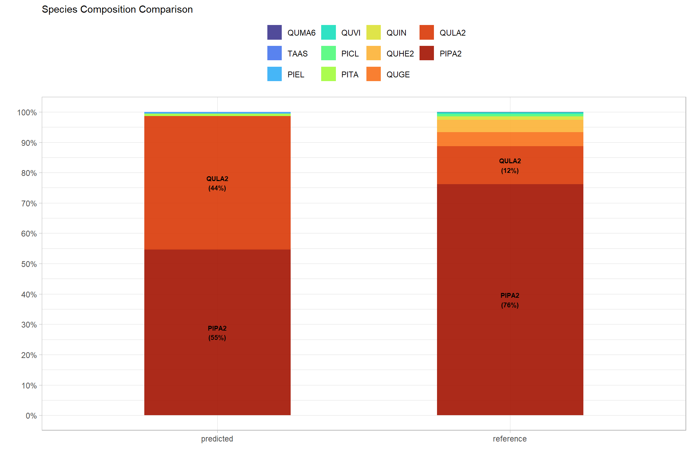
plot the proportion of total by genus
similarity_tree_species_temp$species_comp_df %>%
dplyr::group_by(species_genus) %>%
dplyr::summarise(dplyr::across(c(pred_pct,ref_pct),sum)) %>%
dplyr::ungroup() %>%
dplyr::select(species_genus, pred_pct, ref_pct) %>%
tidyr::pivot_longer(
cols = c(pred_pct, ref_pct)
) %>%
dplyr::mutate(
lab = ifelse(
value>0.05
, paste0(
species_genus
,"\n("
, scales::percent(value,accuracy=1)
, ")"
)
, ""
)
) %>%
dplyr::mutate(
name = ifelse(name == "pred_pct", "predicted", "reference")
, species_genus = forcats::fct_reorder(species_genus, value, .fun = sum)
) %>%
ggplot2::ggplot(
mapping = ggplot2::aes(x = name, y = value, fill = species_genus)
) +
ggplot2::geom_col(width = 0.5, color = NA, alpha = 0.9) +
ggplot2::geom_text(
mapping = ggplot2::aes(label = lab, group = species_genus, fontface = "bold")
# , color = "gray90"
, size = 2.5
, position = ggplot2::position_stack(vjust = 0.5)
) +
ggplot2::scale_y_continuous(labels = scales::percent, breaks = scales::breaks_extended(n=9)) +
ggplot2::scale_fill_viridis_d(option = "magma", begin = 0.25) +
ggplot2::labs(
subtitle = "Genus Composition Comparison"
, x = ""
, y = ""
, fill = ""
) +
ggplot2::theme_light() +
ggplot2::theme(legend.position = "top")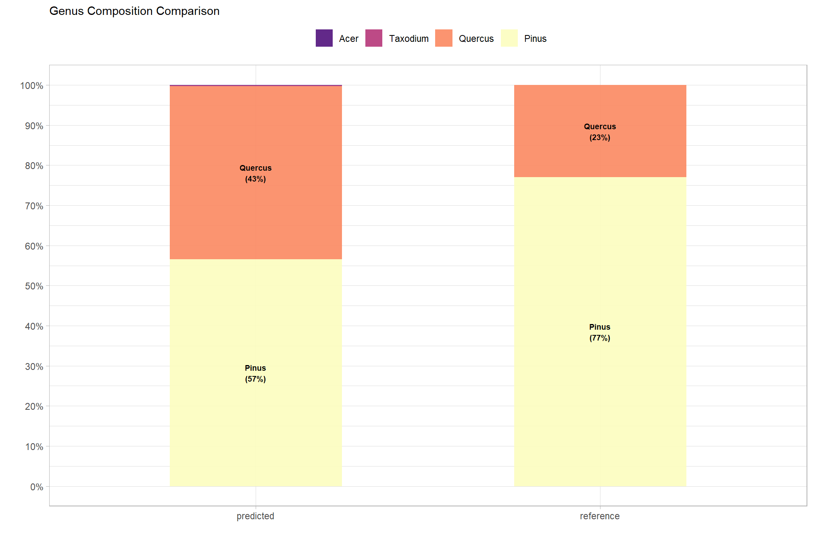